Campaña de Adviento para todo el colegio. Un regalo, el tiempo presente y el «¡Presente!» de pasar lista: Dios se hace presente y nosotros aprendemos a estar presentes. Cada semana, una palabra y una pieza nueva de la caja de regalo, que se abre en Navidad.
PRESENTE. «Aquí y ahora te esperamos, ven Señor». El hilo juega con los tres sentidos de la palabra: el regalo de Navidad, el tiempo presente (ahora) y el «¡Presente!» de pasar lista (aquí). Dios se hace presente, y nosotros aprendemos a estar presentes.
Cita del lema: «El reino de Dios está en medio de nosotros» (Lc 17, 21). Resuena con el evangelio de la 3ª semana: «En medio de vosotros hay uno que no conocéis» (Jn 1, 26).
Símbolo común: una caja de regalo que se completa semana a semana y se abre en Navidad, cuando aparece el Niño Jesús. Hay tres propuestas para el símbolo y cada clase elige una (sección «Símbolo»): A, caja cúbica de 10 cm en estilo de bloques; B, la misma caja con acabado realista; y C, caja abatible de 13 cm con cinta de verdad, cuyas paredes caen solas al abrirla. En Bachillerato y CCFF hay además una urna de compromisos. Si alguna clase no monta la caja, puede proyectar la imagen de la semana (al final de esta sección).
Semana
Fechas
Palabra
Pieza de la caja
Evangelio (ciclo B)
1ª
30 nov – 4 dic
ESTAR presente
La caja, vacía y abierta
Mc 13, 33-37 «Velad»
2ª
9 – 11 dic
HACERSE presente
El papel de envolver
Mc 1, 1-8 «Preparad el camino»
3ª
14 – 18 dic
DESCUBRIR al Presente
El lazo naranja
Jn 1, 6-8.19-28 «En medio de vosotros hay uno que no conocéis»
4ª
21 – 22 dic
RESPONDER ¡Presente!
La tarjeta «Para: ti. De: Dios»
Lc 1, 26-38 «He aquí la esclava del Señor»
Cómo está organizado: cada etapa tiene su sección con un Buenos días para cada día lectivo y la Celebración de Adviento. Los recursos varían a lo largo de la semana (Palabra de Dios, cuento, canción, noticia o historia real, dinámica oral, oración), con enlace a cada recurso externo. Como máximo hay un vídeo por semana y el único material físico es la caja del símbolo, que se completa el primer día de cada semana.
Días lectivos: 1ª semana, 30 nov – 4 dic (5 días) · 2ª semana, 9, 10 y 11 dic (el 7 no es lectivo porque se traslada el festivo del domingo 6, y el 8 es la Inmaculada) · 3ª semana, 14 – 18 dic (5 días) · 4ª semana, 21 y 22 dic.
Imágenes para proyectar
Se proyecta la de cada semana el lunes y puede quedarse de fondo en la pizarra digital durante la semana.
Cada clase construye una caja de regalo que se completa semana a semana y se abre en Navidad, cuando aparece el Niño Jesús. Es el símbolo común de toda la campaña, con los colores corporativos.
Tres propuestas para elegir; cada clase usa una. Las propuestas A y B son la caja cúbica de 10 cm que se forra semana a semana. La propuesta C es una caja abatible de 13 cm: más grande y visible, sin forrar, con una cinta de verdad, y en Navidad sus paredes caen solas al abrirla. Cada propuesta tiene aquí sus plantillas, un vídeo de montaje y cómo queda cada semana.
Propuestas A y B · Caja cúbica (10 cm)
Vídeo tutorial: montaje de la caja cúbica, semana a semana (1 min 13 s) · abrir el vídeo aparte
Hay dos propuestas con la misma geometría y las mismas medidas; solo cambia el acabado. En cada plantilla se ven una al lado de la otra para compararlas:
Propuesta A · Píxel (cúbica): estilo de bloques y píxeles, con un Niño Jesús cúbico.
Propuesta B · Realista: cartón kraft, papel de lunares, cinta satinada, tarjeta de cartón y un Niño Jesús ilustrado (figura plana que se sostiene de pie sobre la paja).
Imprimir: en A3, al 100 % (tamaño real, sin «ajustar a página»), en color y mejor en cartulina fina de 160-200 g. Los márgenes son de unos 6 mm, así que conviene comprobar que la impresora no recorta los bordes.
Leyenda: línea continua = recortar; línea discontinua = doblar; zonas grises = pestañas para pegar.
Quién monta: en Infantil y Primaria 1º-3º conviene que la tutora lleve las piezas recortadas y los niños y niñas las peguen durante el Buenos días. Desde 4º de Primaria pueden recortarlas y montarlas los propios alumnos (un grupo distinto cada semana).
Cuándo: el primer día de cada semana, en el Buenos días «Palabra de Dios y símbolo».
Dónde: junto a la corona de Adviento de la clase.
Cuándo
Plantilla
Qué se añade
Medidas
Lunes 30 nov
1 y 1b · La caja y la tapa
Caja cúbica abierta y vacía, con la tapa al lado
Cubo de 100 mm; tapa de 104 mm
Miércoles 9 dic
2 · El papel de regalo
Piezas para forrar paredes y tapa; la caja se cierra
Piezas de 98 mm y tiras de 102 × 26 mm
Lunes 14 dic
3 · El lazo naranja
Tiras, lazo de píxeles y nudo cúbico
Tiras de 20 mm; nudo de 20 mm
Lunes 21 dic
4 · La tarjeta
Tarjeta «Para: ti · De: Dios» y tarjetas pequeñas con nombre
170 × 100 mm y 70 × 46 mm
Celebración de Navidad
5 · El Niño Jesús
Cabeza, cuerpo con pañales, pesebre, paja y estrella
Cabeza de 28 mm; pesebre de 88 × 50 × 28 mm
Plantilla 1 · La caja (1ª semana)
Las cuatro paredes van en tira y la base cuelga de la segunda. Se cierra el cuadrado con la pestaña del extremo y se pega la base por dentro. La caja se queda abierta y vacía toda la semana: estamos esperando.
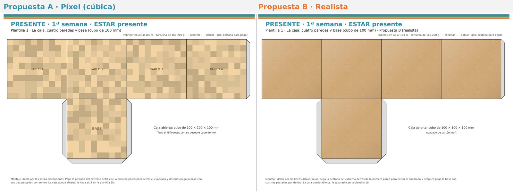
Plantilla 1b · La tapa (1ª semana)
Se monta a la vez que la caja y se deja al lado. Se cerrará la segunda semana, al envolver la caja.
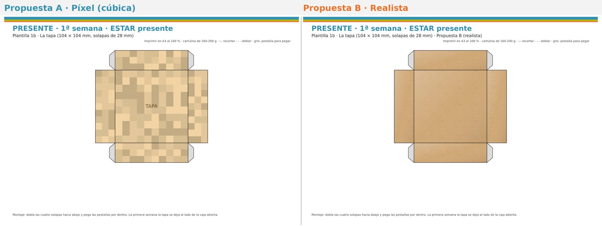
Plantilla 2 · El papel de regalo (2ª semana)
Se pegan las cuatro piezas en las paredes, una en la tapa y las tiras en las solapas de la tapa. Desde esta semana la caja está cerrada.
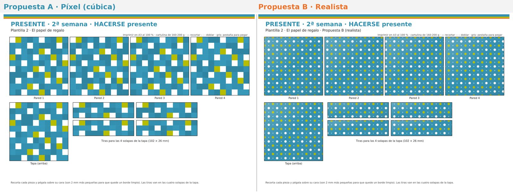
Plantilla 3 · El lazo naranja (3ª semana)
Una tira vertical en cada pared y dos tiras en cruz sobre la tapa. Encima, el lazo de píxeles y el nudo cúbico. Hay un nudo de repuesto.
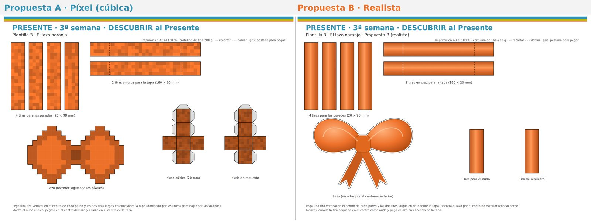
En la propuesta B el nudo no es un cubo: es una tira de cinta que se enrolla en el centro del lazo.
Plantilla 4 · La tarjeta (4ª semana)
La tarjeta grande se cuelga del lazo con un hilo. Las pequeñas son opcionales: una por alumno, con su nombre en «Para», para el gesto de responder «¡Presente!».
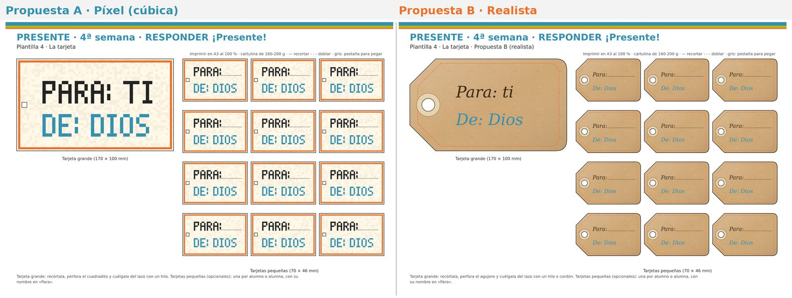
Plantilla 5 · El Niño Jesús cúbico (Navidad)
Cabeza cúbica, cuerpo envuelto en pañales, pesebre con su paja y una estrella para la tapa. Todo cabe dentro de la caja: conviene montarlo antes y guardarlo en secreto dentro, para que en la celebración de Navidad se abra la tapa y aparezca Jesús.
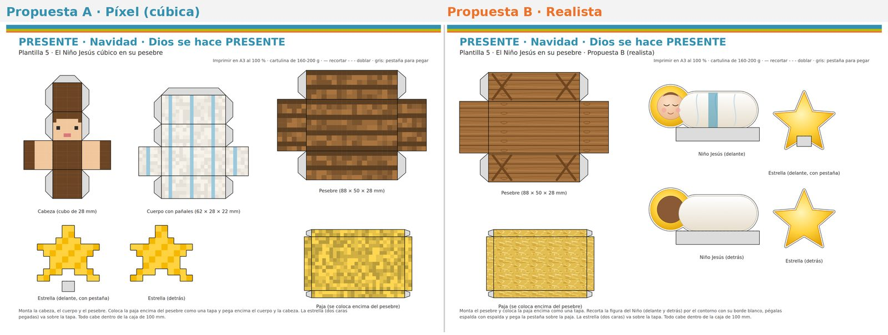
En la propuesta B el Niño Jesús es una figura plana ilustrada (delante y detrás, pegadas espalda con espalda) con una pestaña para sostenerse de pie sobre la paja. El pesebre y la paja tienen las mismas medidas que en la propuesta A.
Cómo queda montada
Así se ve la caja al final de cada semana, para que el profesorado sepa cómo tiene que quedar.
Cada imagen muestra las dos propuestas: A · Píxel a la izquierda y B · Realista a la derecha.
La caja vacía y abierta, con la tapa al lado (plantillas 1 y 1b).
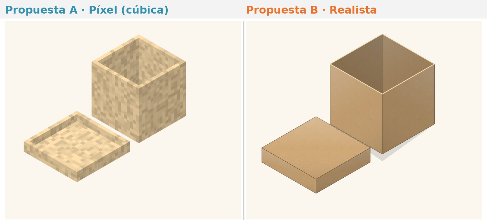
2ª semana · HACERSE presente
La caja cerrada con la tapa y forrada con el papel de regalo (plantilla 2).
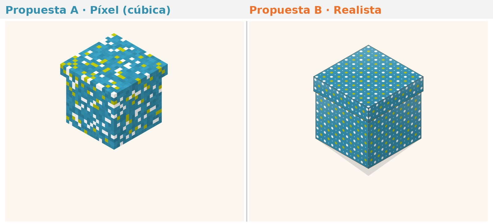
3ª semana · DESCUBRIR al Presente
Con las tiras naranjas, el lazo y el nudo cúbico (plantilla 3).
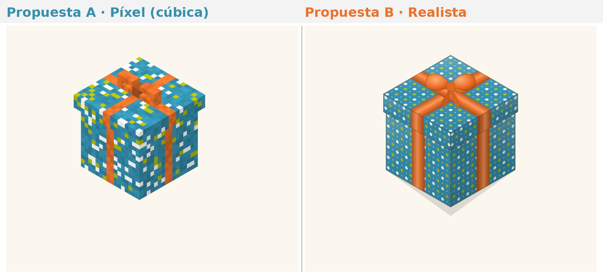
4ª semana · RESPONDER ¡Presente!
Con la tarjeta «Para: ti · De: Dios» colgada del lazo (plantilla 4).
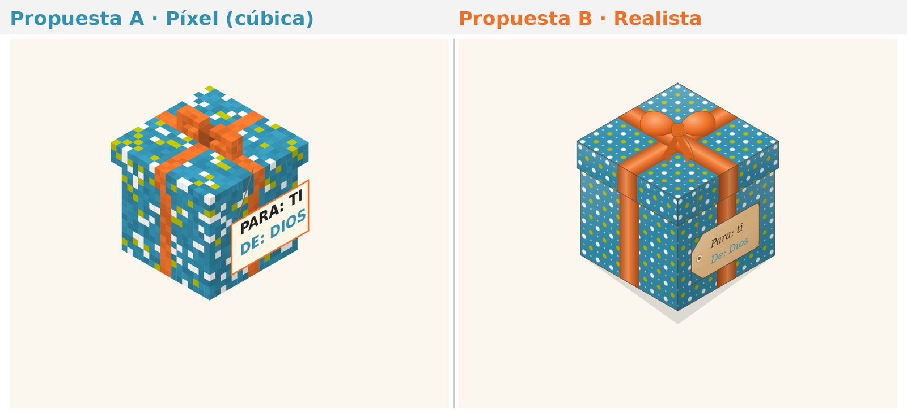
Navidad · Dios se hace PRESENTE
Se abre la caja: la tapa queda a un lado, sale Jesús en su pesebre y la estrella brilla sobre la caja (plantilla 5).
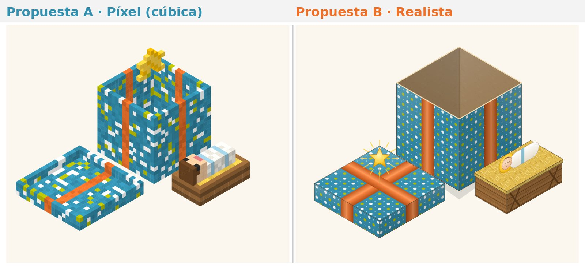
Propuesta C · Caja abatible (13 cm)
Una caja más grande que se monta en plano, en forma de cruz. Las cuatro paredes no se pegan entre sí: las sostienen la tapa y una cinta de verdad. En Navidad, al desatar la cinta y levantar la tapa, las paredes caen hacia fuera a la vez y aparece el Niño Jesús en su cuna, rodeado de las cuatro palabras del Adviento y de los nombres de la clase.
Vídeo tutorial: montaje de la caja abatible, de la cruz a la Navidad (1 min 26 s) · abrir el vídeo aparte
Material: tres hojas A3 de cartulina de 200-240 g, tijeras, pegamento y un metro de cinta de raso naranja de 2,5 cm de ancho.
Cómo imprimir: al 100 % (tamaño real) y en color. Las páginas 1 y 2 son las dos caras de la lámina 1: si la impresora imprime a doble cara, se imprimen juntas volteando por el borde largo; si no, se imprime solo la página 1 y la caja queda blanca por fuera, para que la decore la clase. La lámina 3 es opcional.
Cuándo
Qué se hace
Pieza
Lunes 30 nov
Se monta la cruz y se deja abierta junto a la corona. Cada alumno deja su nombre en la base diciendo «¡Presente!»
Láminas 1 y 3
Miércoles 9 dic
Se levantan las cuatro paredes y se encaja la tapa: la caja queda cerrada con los nombres dentro
Lámina 2 (tapa)
Lunes 14 dic
Se ata la cinta naranja en cruz con una lazada
Cinta
Lunes 21 dic
Se cuelga la tarjeta del lazo; por detrás, los compromisos de la clase
Lámina 2 (tarjeta)
Antes de Navidad
Sin que lo vean los alumnos, se pegan dentro la cuna con la paja, el Niño Jesús y la estrella
Lámina 2
Celebración de Navidad
Se desata la cinta y se levanta la tapa: las paredes caen y aparece Jesús
—
Lámina 1 · La cruz, cara interior
En cada pared, la palabra de una semana con su evangelio: ESTAR (norte), HACERSE (este), DESCUBRIR (sur) y RESPONDER (oeste). En la base, el sitio de la cuna y de los nombres. Las paredes este y oeste se pegan por debajo de la base con su pestaña.
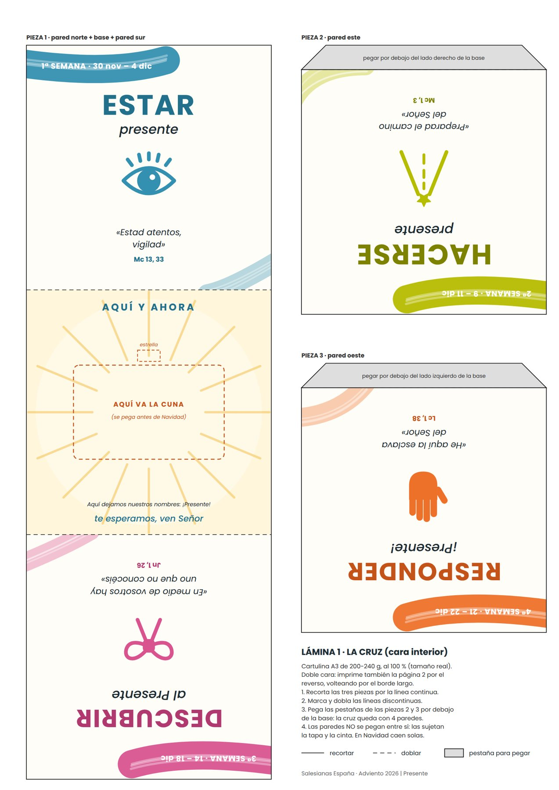
Lámina 1 · Reverso, exterior de la caja
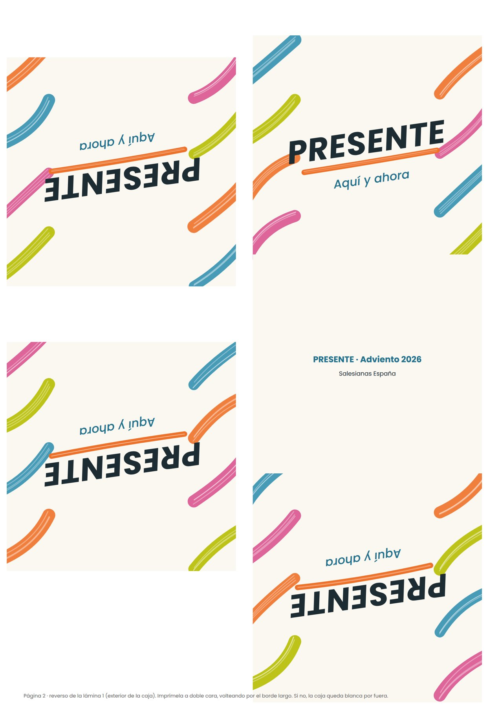
Lámina 2 · Tapa, cuna, Niño Jesús, estrella y tarjeta
La tapa se dobla con el dibujo hacia fuera. El Niño Jesús se dobla por la mitad y se queda de pie en la cuna; las dos estrellas se pegan espalda con espalda.
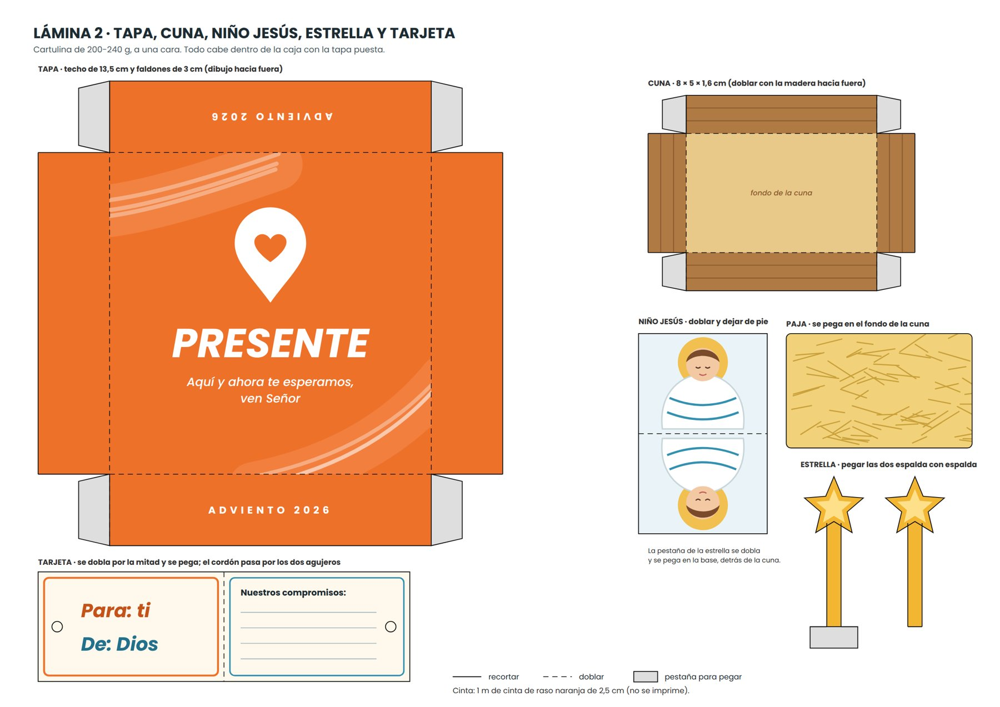
Lámina 3 · Nombres y compromisos (opcional)
Círculos para los nombres de la 1ª semana y tarjetas «Esta semana estaré presente para…», que sirven también para la urna de Bachillerato y CCFF.
La cruz abierta junto a la corona, con los nombres de la clase en la base. La tapa espera al lado.
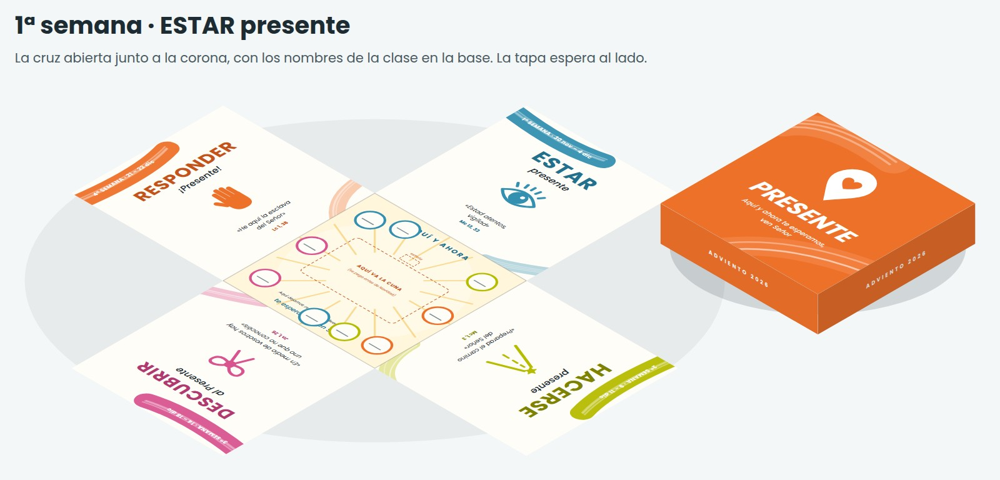
2ª semana · HACERSE presente
Se levantan las cuatro paredes y se encaja la tapa: la caja queda cerrada.
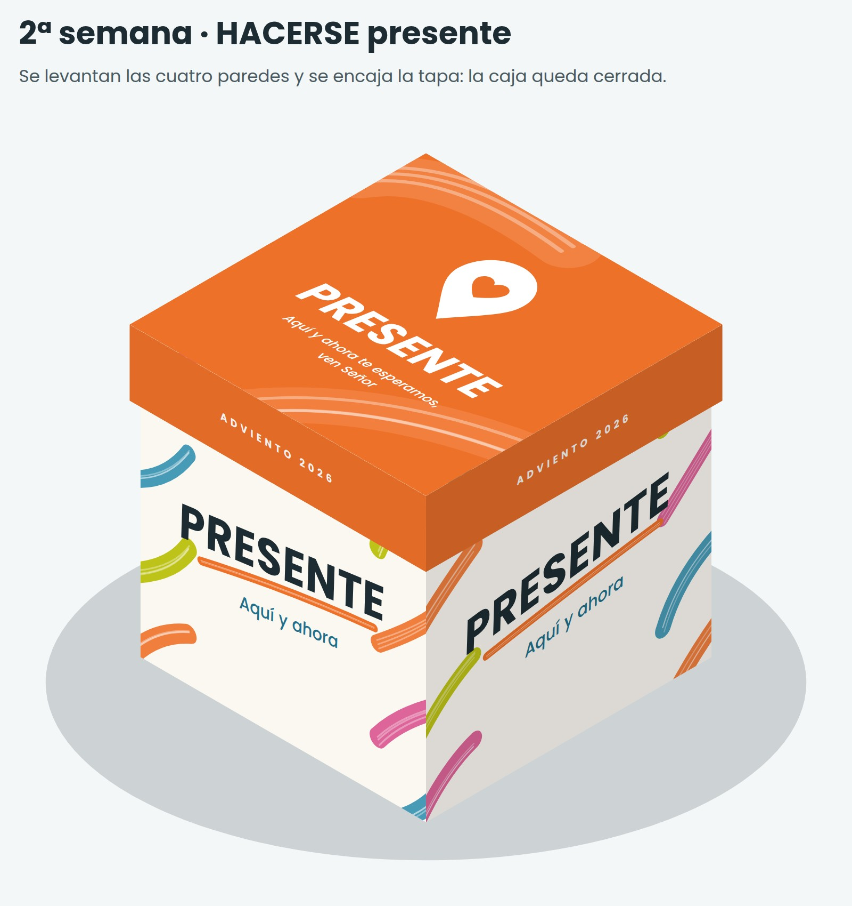
3ª semana · DESCUBRIR al Presente
Se ata en cruz la cinta naranja con una lazada.
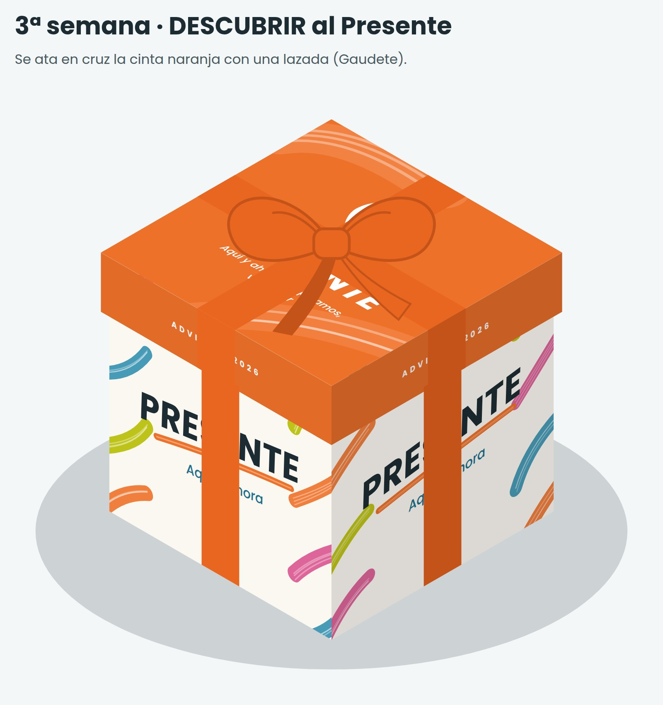
4ª semana · RESPONDER ¡Presente!
La tarjeta «Para: ti · De: Dios» cuelga del lazo.
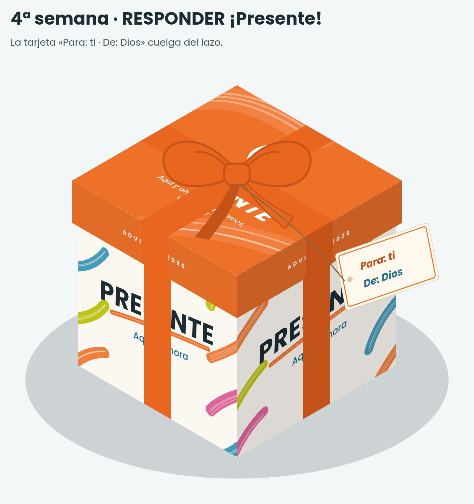
Navidad · Dios se hace PRESENTE
Se desata la cinta, se levanta la tapa y las paredes caen: aparece Jesús en la cuna, con la estrella, rodeado de las cuatro palabras y de los nombres de la clase.
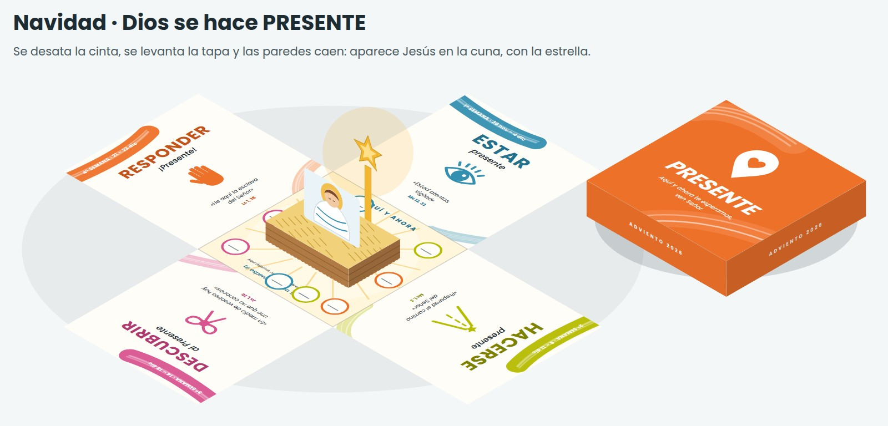
Infantil
Semana 1 · 30 nov – 4 dic
ESTAR presente
Palabra de la semana: «Estad atentos, vigilad» (Mc 13, 33). Reto de la semana: al pasar lista, contestar «¡Presente!» con la mano en el corazón. Símbolo: dos propuestas; cada clase elige una:
Caja cúbica (propuestas A y B): plantillas 1 y 1b: se presenta la caja ya montada, abierta y vacía, con la tapa al lado.
Caja abatible (propuesta C): lámina 1: la cruz se deja abierta en plano junto a la corona y cada alumno pone en el centro un círculo con su nombre (lámina 3) diciendo «¡Presente!».
Lunes 30 novPalabra de Dios y símbolo
Introducción: «¡Buenos días! Hoy empieza un tiempo muy especial que se llama Adviento. Son cuatro semanas para prepararnos, porque viene alguien a quien queremos muchísimo: ¡Jesús! En la corona encendemos hoy la primera vela». Se enseña la caja cúbica ya montada (plantilla 1), abierta y vacía, con la tapa al lado.
Contenido: «Mirad qué caja tan rara: parece hecha de bloques. Es una caja de regalo… ¡pero está vacía! ¿Para quién será? ¿Qué habrá dentro en Navidad? Todavía no lo sabemos. Cada semana le iremos poniendo algo y, el día de la fiesta de Navidad, la abriremos». Después, la Palabra contada: Jesús les dijo a sus amigos: «¡Estad atentos! ¡Estad despiertos, con los ojos bien abiertos!».
Reflexión: Para descubrir el regalo hay que estar muy atentos. Jugamos a «despertarnos»: abrimos mucho los ojos, ponemos las manos detrás de las orejas para escuchar y la mano en el corazón para querer.
¿Qué hacemos cuando esperamos a alguien que queremos mucho, como los abuelos?
¿Cómo podemos estar atentos en clase?
Oración: «Jesús, aquí estamos, esperándote. Queremos tener los ojos abiertos, las orejas atentas y el corazón contento. Aquí y ahora te esperamos. ¡Ven, Señor!». Avemaría. Señal de la cruz.
Martes 1 dicCuento
Introducción: «¿Sabéis quién espera muy, muy bien? ¡Un perrito! Escuchad esta historia y fijaos en lo que hace».
Contenido – «Toby, el perro que esperaba»: Toby era un perro pequeño, de orejas largas y cola inquieta. Todas las tardes, cuando el reloj daba las cinco, se sentaba junto a la puerta. Esperaba a Pablo, que volvía del cole. Un día pasó una mosca: «¡Bzzz!». Toby la miró… pero no se movió. Luego pasó el gato del vecino: «¡Miau!». Toby levantó una oreja… y siguió quieto, mirando la puerta. Después sonó la tele en el salón, pero Toby no fue a verla. De pronto, se oyeron unos pasos: tap, tap, tap. ¡Era Pablo! Toby dio saltos, movió la cola y le llenó de besos. Pablo se echó a reír: «¡Toby, siempre me estás esperando!».
Reflexión: Toby no esperaba dormido ni distraído: esperaba atento, porque quería mucho a Pablo.
¿Qué cosas intentaron distraer a Toby?
¿Qué cosas nos distraen a nosotros?
¿Cómo esperamos a Jesús? ¡Como Toby!
Oración: «Jesús, quiero esperarte como Toby: atento y contento. Ayúdame a no distraerme y a estar con los que tengo cerca». Padrenuestro. Señal de la cruz.
Miércoles 2 dicCanción con gestos
Introducción: «Hoy aprendemos una canción de Adviento que tiene gestos. ¡Cantar también es rezar!».
Reflexión: Preguntamos qué palabras recuerdan de la canción. El Adviento es un tiempo alegre: esperamos un regalo muy grande, que es Jesús. Pero hay que prepararse, como cuando nos preparamos para un cumpleaños.
¿Qué gesto os ha gustado más?
¿Qué hacemos en casa para prepararnos para Navidad?
Oración: Repetimos el estribillo como oración. Avemaría. Señal de la cruz.
Jueves 3 dicJuego «Pasamos lista con Dios»
Introducción: «Cada mañana pasamos lista y cada uno dice «¡Presente!». ¿Sabéis que Dios también nos conoce a todos por nuestro nombre?».
Contenido: la maestra pasa lista muy despacio y con voz suave. Cada niño se pone de pie y contesta «¡Presente!» con la mano en el corazón. Después dice: «Dios sabe tu nombre, [nombre], y se alegra de que estés aquí». Al terminar, pregunta: «¿Y Jesús? ¿Está aquí?». Todos responden: «¡Ven, Señor!», y miran la caja vacía.
Reflexión: Decir «¡Presente!» es decir «estoy aquí, contigo». Jesús también quiere estar aquí, con nosotros, en nuestra clase.
¿Cómo te sientes cuando alguien dice tu nombre con cariño?
¿A quién puedes llamar hoy por su nombre para que se sienta querido?
Oración: «Jesús, tú sabes mi nombre y me quieres. Aquí estoy. ¡Ven a nuestra clase!». Padrenuestro. Señal de la cruz.
Viernes 4 dicJuego del silencio
Introducción: «Hoy vamos a estar presentes… ¡con las orejas! Vamos a descubrir sonidos escondidos».
Contenido: nos sentamos bien, cerramos los ojos y, en silencio total, escuchamos durante 30 segundos (se puede repetir si sale bien). Después, cada uno que quiera cuenta qué ha oído: pájaros, pasos en el pasillo, una puerta, el viento, nuestra respiración…
Reflexión: Cuando estamos en silencio descubrimos cosas que antes no oíamos. A Jesús también lo descubrimos mejor cuando estamos tranquilos y atentos. Repasamos la semana: ¿hemos dicho «¡Presente!» con la mano en el corazón? ¿Hemos estado atentos como Toby?
Canción para cerrar la semana:Olor a tostadas, de Hakuna Group Music. Habla de disfrutar las cosas sencillas de cada día: la merienda, un abrazo, jugar. Mientras suena, cada uno piensa en una cosa pequeña que le ha hecho feliz esta semana.
Oración: «Gracias, Jesús, por esta semana, por mis amigos y por mi familia. El lunes te seguiremos esperando. ¡Ven, Señor!». Avemaría. Señal de la cruz.
Semana 2 · 9 – 11 dic
HACERSE presente
Palabra de la semana: «Preparad el camino del Señor» (Mc 1, 3). Reto de la semana: hacer cada día una cosa para preparar el camino: recoger, ayudar, pedir perdón. Símbolo: dos propuestas; cada clase elige una:
Caja cúbica (propuestas A y B): plantilla 2: se forran las paredes y la tapa con el papel de regalo y la caja queda cerrada.
Caja abatible (propuesta C): se levantan las cuatro paredes, con las palabras de las semanas hacia dentro, y se encaja la tapa (lámina 2). Los nombres quedan guardados dentro.
Miércoles 9 dicPalabra de Dios y símbolo
Introducción: «¡Hemos tenido unos días de fiesta! Pero la caja nos ha estado esperando. Hoy encendemos la segunda vela y le ponemos a la caja su papel de regalo». Entre todos se pegan las piezas de la plantilla 2 en las paredes y en la tapa.
Contenido: «Cuando envolvemos un regalo lo hacemos con mucho cariño, para que la persona que lo recibe se ponga contenta. En tiempos de Jesús había un hombre, Juan el Bautista, que iba por el desierto gritando: «¡Preparad el camino, que viene el Señor!»». Hacemos el gesto de «alisar un camino» con las dos manos, como si quitáramos piedras.
Reflexión: Preparar el camino a Jesús es hacer cosas buenas: recoger los juguetes, ayudar a un amigo, pedir perdón cuando nos enfadamos, compartir.
¿Qué cosa buena puedes hacer hoy en clase?
¿Y en casa?
Oración: «Jesús, quiero preparar mi corazón para ti, como preparamos esta caja: con mucho cariño. Ayúdame a hacer cosas buenas». Padrenuestro. Señal de la cruz.
Jueves 10 dicPalabra de Dios: María Inmaculada
Introducción: «El martes fue la fiesta de María Inmaculada. María es la mamá de Jesús y también nuestra mamá del cielo. En nuestro colegio la queremos mucho». Se muestra la imagen de María de la clase o del colegio.
Contenido: Contamos la Palabra: un día, un ángel llamado Gabriel visitó a María en su casa de Nazaret y le dijo: «Alégrate, llena de gracia, el Señor está contigo» (Lc 1, 28). María tenía el corazón limpio y lleno de amor: fue la persona que mejor preparó el camino a Jesús.
Reflexión: ¿Sabéis que las palabras del ángel son las primeras del Avemaría? Cada vez que la rezamos, saludamos a María igual que el ángel. Podemos ofrecer a María una cosa buena que hayamos hecho esta semana.
¿Cómo saludamos a nuestra mamá cuando nos viene a buscar?
Oración: Avemaría muy despacio: la maestra dice cada frase y todos la repiten, mirando la imagen de María. Señal de la cruz.
Viernes 11 dicCuento
Introducción: «¿Qué pasa en casa cuando viene alguien a quien queremos mucho?». Dejamos que cuenten un par de ejemplos.
Contenido – «La visita de la abuela»: El viernes por la noche, mamá le dijo a Lucía: «El domingo viene la abuela a comer». ¡Qué nervios! El sábado, Lucía recogió todos los juguetes que estaban por el suelo. Ayudó a papá a limpiar la mesa y eligió el mantel de flores, el que más le gusta a la abuela. Después hizo un dibujo: la abuela y ella, cogidas de la mano, en el parque. El domingo por la mañana se puso su jersey favorito y se sentó junto a la ventana. Cuando sonó el timbre, corrió a abrir. La abuela la abrazó fuerte y miró a su alrededor: «¡Qué bonito lo habéis preparado todo! Se nota que me esperábais con cariño».
Reflexión: Lucía se preparó porque quería mucho a su abuela. Nosotros nos preparamos para Navidad porque queremos mucho a Jesús. Repasamos el reto: ¿qué hemos preparado esta semana?
¿Qué hizo Lucía para preparar la visita?
¿Qué podemos hacer nosotros este fin de semana en casa?
Oración: «Jesús, como Lucía con su abuela, queremos esperarte con todo preparado y con mucho cariño». Padrenuestro. Señal de la cruz.
Semana 3 · 14 – 18 dic
DESCUBRIR al Presente
Palabra de la semana: «En medio de vosotros hay uno que no conocéis» (Jn 1, 26). Reto de la semana: decir cada día una cosa bonita a un compañero distinto. Símbolo: dos propuestas; cada clase elige una:
Caja cúbica (propuestas A y B): plantilla 3: tiras, lazo y nudo naranjas de papel.
Caja abatible (propuesta C): se ata en cruz una cinta de raso naranja de verdad (2,5 cm de ancho, un metro por clase) con una lazada.
Lunes 14 dicPalabra de Dios y símbolo
Introducción: «Ayer fue un domingo muy alegre, que se llama Gaudete, que quiere decir «alegraos». Por eso la tercera vela es rosa. ¡Y hoy nuestra caja se pone un lazo naranja, uno de los colores de nuestro colegio!». Se pegan las tiras, el lazo y el nudo cúbico de la plantilla 3.
Contenido: «Juan el Bautista le decía a la gente: «Jesús ya está aquí, en medio de vosotros, ¡pero no lo conocéis!». Era como jugar al escondite: Jesús estaba muy cerca y la gente no se daba cuenta».
Reflexión: ¿Dónde está Jesús? ¡Aquí, en medio de nosotros! Está cuando nos queremos, cuando jugamos juntos y cuando cuidamos al que está triste. Miramos al compañero de al lado y le sonreímos: Jesús también está en él.
¿Para qué sirve un lazo? (Para atar, para unir).
¿Qué nos une a los de esta clase?
Oración: Nos damos la mano en corro, como un lazo. «Jesús, tú estás en medio de nosotros. Gracias por mis amigos». Padrenuestro. Señal de la cruz.
Martes 15 dicCuento
Introducción: «Hoy os cuento la historia de un zapatero que esperaba una visita muy, muy importante».
Contenido – «La Navidad de Papá Panov» (versión corta del cuento de Ruben Saillens): Papá Panov era un zapatero viejito que vivía solo en un pueblo con mucha nieve. Una noche soñó que Jesús le decía: «Mañana iré a tu casa». ¡Qué contento se despertó! Preparó café y se sentó junto a la ventana a esperar. Primero pasó un barrendero temblando de frío, y Papá Panov le invitó a un café calentito. Después pasó una mamá muy cansada con su bebé, y les dio de comer y unos zapatitos para el niño. Por la tarde vio a un niño que lloraba porque se había perdido, y le acompañó a casa. Por la noche, Papá Panov estaba triste: «Jesús no ha venido». Entonces oyó una voz muy dulce: «¡Sí he venido! Era yo el barrendero, era yo la mamá y era yo el niño».
Reflexión: Jesús viene a vernos en las personas que necesitan ayuda.
¿A quién ayudó Papá Panov?
¿A quién podemos ayudar nosotros hoy?
Oración: «Jesús, que sepa verte en los que me necesitan». Avemaría. Señal de la cruz.
Miércoles 16 dicJuego «¿Está aquí Jesús?»
Introducción: «Como Papá Panov, vamos a jugar a descubrir dónde está Jesús».
Contenido: la maestra dice situaciones. Si hay amor, todos se levantan y dicen «¡Aquí está Jesús!». Si no, se quedan sentados y en silencio. Situaciones: «Comparto mi merienda con un amigo». «Empujo a un compañero en la fila». «Ayudo a recoger la clase». «Dejo solo a un niño en el patio». «Doy un abrazo a quien llora». «Digo «gracias» a la señora del comedor». «No presto mis colores». «Pido perdón».
Reflexión: Jesús está presente cada vez que nos queremos. Cuando no nos queremos, es como si le dejáramos fuera.
¿Cuál de estas cosas has hecho tú hoy?
Oración: «Jesús, quiero que estés siempre en mi clase y en mi casa». Padrenuestro. Señal de la cruz.
Jueves 17 dicCanción
Introducción: «Hoy escuchamos una canción que nos dice que Jesús nos enseña el camino».
Reflexión: Una brújula o un mapa nos enseñan por dónde ir. Jesús nos enseña el camino para querer a los demás y ser felices.
¿Qué te enseña Jesús?
¿A quién vas a ayudar hoy?
Oración: «Jesús, enséñame el camino y camina conmigo». Avemaría. Señal de la cruz.
Viernes 18 dicOración de gracias
Introducción: «Toda la semana hemos dicho cosas bonitas a los compañeros. Hoy damos gracias a Jesús por ellos».
Contenido: nos sentamos en corro alrededor de la caja con su lazo. Cada niño que quiera dice: «Gracias, Jesús, por [nombre de un compañero], porque…». La maestra se asegura de que todos sean nombrados al menos una vez.
Reflexión: Cada amigo es un regalo, ¡un presente! En ellos también descubrimos a Jesús. ¿Cómo nos hemos sentido al oír nuestro nombre?
Oración: Padrenuestro, cogidos de la mano como un lazo. Señal de la cruz.
Semana 4 · 21 y 22 dic
RESPONDER ¡Presente!
Palabra de la semana: «He aquí la esclava del Señor» (Lc 1, 38). Reto de la semana: cuando alguien necesite ayuda, decir «¡Aquí estoy!» e ir. Símbolo: dos propuestas; cada clase elige una:
Caja cúbica (propuestas A y B): plantilla 4: la tarjeta «Para: ti · De: Dios» se cuelga del lazo.
Caja abatible (propuesta C): la tarjeta de la lámina 2 se ata al lazo; por detrás, la clase escribe sus compromisos para Navidad.
Lunes 21 dicPalabra de Dios y símbolo
Introducción: «Encendemos la cuarta vela: ¡ya están todas! Y a nuestra caja le falta lo último: la tarjeta. ¿Qué pondrá?». Se cuelga del lazo la tarjeta grande de la plantilla 4 y se lee en voz alta: «Para: ti. De: Dios». ¡El regalo es para nosotros!
Contenido: Contamos la Palabra: el ángel Gabriel visitó a María y le dijo que Dios la había elegido para ser la mamá de Jesús. María no dijo «luego» ni «no sé». Dijo: «He aquí la esclava del Señor», que quiere decir «¡Aquí estoy!».
Reflexión: María dijo «¡Presente!» a Dios. Si lo desea, la maestra entrega a cada niño una tarjeta pequeña con su nombre en «Para». Nos ponemos de pie, abrimos los brazos y decimos juntos: «¡Aquí estoy!».
¿Qué le dijo el ángel a María?
¿Qué contestó María?
Oración: «María, tú dijiste «aquí estoy». Enséñanos a decirlo también». Avemaría. Señal de la cruz.
Martes 22 dicCanción del lema
Introducción: «¡Ya casi es Navidad! Hoy escuchamos la canción de nuestro colegio de este año, que se llama igual que nuestro lema: Aquí y Ahora».
Contenido:videoclip «Aquí y Ahora» de las Salesianas. Mientras suena, la caja está cerrada en el centro. Al terminar, la maestra recuerda que en la celebración de Navidad la abriremos y descubriremos el regalo.
Reflexión: ¿Qué regalo habrá dentro? Dejamos que imaginen. El regalo más grande de la Navidad es Jesús, que viene a estar con nosotros aquí y ahora. ¡Dios se hace presente! En vacaciones, podemos ser un regalo para nuestra familia: ayudar, compartir, dar abrazos.
Oración: «Gracias, Jesús, por venir a estar con nosotros. Bendice a nuestras familias en esta Navidad. ¡Feliz Navidad!». Padrenuestro. Señal de la cruz.
Celebración de Adviento
«La caja misteriosa»
Objetivos: descubrir que en Adviento esperamos a Jesús; aprender a responder «¡Presente!» a Dios; conocer la corona y la caja de Adviento.
Temporalización: 20-25 minutos, 1ª semana, en la capilla o en el aula.
Señal de la cruz.
Canto: una canción de Adviento sencilla y con gestos, conocida por los niños.
Introducción: «¡Buenos días! Hoy tenemos una visita muy especial: una caja de regalo gigante. Está vacía y abierta… ¿Para quién será? ¿Qué habrá dentro en Navidad? Para descubrirlo, durante cuatro semanas tenemos que estar muy atentos».
Contenido – pasamos lista con Dios: la maestra dice: «Dios nos conoce a todos por nuestro nombre». Pasa lista de la clase y cada niño se levanta y dice «¡Presente!». Después se enciende la primera vela de la corona: «Jesús también dice ¡Presente!, porque viene a estar con nosotros».
Palabra de Dios (adaptada, Mc 13, 33-37): «Jesús dijo a sus amigos: estad atentos, estad despiertos, porque el dueño de la casa va a volver y no sabéis cuándo. ¡Que no os encuentre dormidos!».
Reflexión (con preguntas):
¿A quién esperamos en Navidad? (A Jesús).
¿Cómo lo esperamos? Con los ojos abiertos (señalamos los ojos), con las manos que ayudan (mostramos las manos) y con el corazón contento (mano en el corazón).
Gesto: cada niño dibuja su cara en un círculo de papel con su nombre y lo mete en la caja diciendo «¡Presente!». La caja queda en clase toda la temporada.
Oración: repetimos con gestos: «Jesús (brazos arriba), aquí (señalamos el suelo) y ahora (palmada) te esperamos (brazos abiertos). ¡Ven, Señor!». Avemaría.
Señal de la cruz.
Materiales: caja de regalo grande, corona de Adviento, círculos de papel, ceras, lista de clase.
Eucaristía de Adviento
«¡Jesús está aquí!»
Objetivos: descubrir que en la misa Jesús se hace presente de verdad; participar con gestos, cantos y silencio; ofrecer a Jesús nuestra caja y nuestros regalos para los demás.
Temporalización: 30 minutos como máximo, en la 3ª semana (14-18 dic), en la capilla. Es una misa muy sencilla: conviene acordar con el sacerdote las adaptaciones que permite el Directorio para las Misas con niños (una sola lectura, moniciones breves, cantos con gestos). En Adviento no se dice el Gloria.
Lecturas: Evangelio del III Domingo de Adviento, ciclo B (Jn 1, 6-8.19-28), leído en una versión breve o infantil si el sacerdote lo ve oportuno.
Monición de entrada: «¡Buenos días! Hoy estamos en la casa de Jesús. Hemos traído nuestra caja de regalo: ya tiene su papel y su lazo naranja. Todavía no sabemos qué hay dentro. Pero hoy, en la misa, Jesús viene de verdad a estar con nosotros. ¡Vamos a recibirle con alegría!».
Canto de entrada:Adviento, de Ixcís, con los gestos que aprendimos en los Buenos días.
Monición a la lectura: «Juan el Bautista le decía a la gente: «Jesús ya está aquí, en medio de vosotros». Vamos a escucharle con los ojos bien abiertos, las orejas atentas y el corazón contento». Antes del Evangelio nos ponemos de pie y cantamos el Aleluya con palmas.
Peticiones: las leen niños de 5 años, ayudados por su maestra. Respondemos: «Jesús, escúchanos».
Por el Papa, los obispos y los sacerdotes, para que nos enseñen a querer a Jesús.
Por los niños que no tienen casa, comida o familia en esta Navidad.
Por las familias que recibirán los alimentos de nuestra Operación Kilo.
Por nuestros papás, mamás, abuelos y hermanos.
Por nosotros, para que seamos buenos amigos y ayudemos a los demás.
Ofertorio: en procesión, unos niños llevan:
La caja de regalo de la clase: «Te ofrecemos, Jesús, nuestra caja. Todo el Adviento te hemos estado esperando».
Una bolsa de la Operación Kilo: «Te ofrecemos los alimentos para las familias que lo necesitan».
Un dibujo de la clase: «Te ofrecemos nuestros juegos, nuestros amigos y nuestro cole».
El pan y el vino: «Te ofrecemos el pan y el vino, que se convertirán en Jesús».
Santo: cantado, con gestos (manos arriba en «Santo», palmas en «Hosanna»).
Padrenuestro: cogidos de la mano, como el lazo de nuestra caja.
Paz: la maestra explica antes cómo darnos la paz: un abrazo o un apretón de manos solo a los compañeros que tenemos al lado, y volvemos a nuestro sitio.
Comunión: los niños no comulgan todavía, pero se acercan con las manos cruzadas sobre el pecho para que el sacerdote les dé la bendición. Las maestras acompañan la fila y ayudan a que se haga despacio y en silencio. Mientras, suena música tranquila. Después, un minuto de silencio: «Cerramos los ojos y le decimos a Jesús: ¡Gracias por estar aquí!».
Acción de gracias: repetimos con gestos la oración del Adviento: «Jesús (brazos arriba), aquí (señalamos el suelo) y ahora (palmada) te esperamos (brazos abiertos). ¡Ven, Señor!». Para salir, cantamos Qué bien se está cuando se está bien, de Hakuna.
Materiales: la caja de la clase (símbolo), una bolsa de la Operación Kilo, un dibujo por clase, pan y vino, hoja de peticiones en letra grande, canciones preparadas.
Primaria 1º-3º
Semana 1 · 30 nov – 4 dic
ESTAR presente
Palabra de la semana: «Estad atentos, vigilad: pues no sabéis cuándo es el momento» (Mc 13, 33). Reto de la semana: escuchar mirando a los ojos a quien me habla. Símbolo: dos propuestas; cada clase elige una:
Caja cúbica (propuestas A y B): plantillas 1 y 1b: se presenta la caja ya montada, abierta y vacía, con la tapa al lado.
Caja abatible (propuesta C): lámina 1: la cruz se deja abierta en plano junto a la corona y cada alumno pone en el centro un círculo con su nombre (lámina 3) diciendo «¡Presente!».
Lunes 30 novPalabra de Dios y símbolo
Introducción: «¡Buenos días! Ayer empezó el Adviento: cuatro semanas para preparar la llegada de Jesús. Hoy encendemos la primera vela de la corona». Se presenta la caja cúbica (plantilla 1): abierta, vacía y con la tapa al lado. «Cada semana le añadiremos algo y en Navidad descubriremos qué hay dentro».
Contenido: Leemos Mc 13, 33-37. Antes, explicamos la historia: un señor se va de viaje y deja a sus criados cuidando la casa. Al portero le pide que se quede despierto vigilando la puerta, porque no sabe a qué hora va a volver. Jesús termina diciendo: «Lo que os digo a vosotros, lo digo a todos: ¡Velad!».
Reflexión: Durante el Adviento vamos a trabajar una palabra muy especial: PRESENTE. Un presente es un regalo. El presente es el tiempo de ahora. Y «¡Presente!» es lo que decimos cuando pasan lista. Esta semana la palabra es ESTAR presente. A veces estamos en clase, pero la cabeza está en el recreo, en la tele o en el juego de la tarde.
¿Qué tiene que hacer el portero de la historia?
¿Qué cosas nos distraen cuando alguien nos habla?
Oración: «Jesús, aquí estamos, al empezar el Adviento. Ayúdanos a estar despiertos y atentos, a escuchar a los demás y a esperarte con alegría. Aquí y ahora te esperamos. ¡Ven, Señor!». Padrenuestro. Señal de la cruz.
Martes 1 dicCuento
Introducción: «Hoy os cuento la historia de alguien que no se podía dormir por nada del mundo. ¿Sabéis qué es un faro?».
Contenido – «El guardián del faro»: Tomás cuidaba un faro en lo alto de unas rocas, junto al mar. Cada tarde subía los 120 escalones, limpiaba el cristal y encendía la gran luz. Después se quedaba despierto toda la noche, mirando las olas, para que la luz no se apagara. Una noche de invierno hubo una tormenta terrible. Tomás estaba cansadísimo y pensó: «Por una vez que cierre los ojos, no pasará nada». Se sentó en su sillón y empezó a dar cabezadas. Pero entonces recordó que allá fuera, en el mar, había pescadores buscando el camino a casa. Se levantó, limpió otra vez el cristal empañado y la luz brilló más fuerte que nunca. Al amanecer, alguien llamó a su puerta. Era un pescador, empapado y sonriente: «¡Gracias! Tu luz nos ha traído a casa».
Reflexión: Tomás estaba despierto porque otros le necesitaban. Estar atento es una forma de querer.
¿Por qué no se durmió Tomás?
¿Quién necesita que tú estés atento hoy?
Oración: «Jesús, tú eres nuestra luz. Que yo también sepa estar atento para ayudar a los demás». Avemaría. Señal de la cruz.
Miércoles 2 dicCanción
Introducción: «Hoy recibimos el Adviento cantando. Escuchad bien la letra, porque luego os preguntaré qué dice».
Contenido: canción Adviento llegó, de Unai Quirós. La primera vez, escuchar; la segunda, cantar el estribillo todos juntos.
Reflexión: El Adviento es un tiempo de alegría, porque esperamos a alguien que nos quiere mucho. Pero también es tiempo de prepararnos: igual que antes de un cumpleaños preparamos la fiesta, ahora preparamos el corazón.
¿Qué frase de la canción recuerdas?
¿Cómo se prepara tu familia para la Navidad?
Oración: «Jesús, el Adviento ha llegado y queremos prepararnos para recibirte». Padrenuestro. Señal de la cruz.
Jueves 3 dicHistoria real
Introducción: «Hoy os cuento una historia que pasó de verdad, en Japón, hace unos cien años. Es la historia de un perro muy fiel».
Contenido – Hachikō: Hachikō era un perro de la raza akita. Vivía en Tokio con un profesor de universidad. Cada mañana le acompañaba a la estación de tren y cada tarde volvía a esperarle a la misma hora. Un día, el profesor murió en el trabajo y ya no volvió. Pero Hachikō siguió yendo a la estación cada tarde, durante casi diez años, a esperarle. La gente de la estación empezó a cuidarle y a darle de comer. Hoy hay una estatua de Hachikō en esa estación, y es uno de los lugares más famosos de Tokio.
Reflexión: Hachikō esperaba con todo su cariño, aunque su dueño no podía volver. Nosotros esperamos a Jesús, y él sí viene seguro.
¿Por qué crees que Hachikō seguía esperando?
¿Esperamos a Jesús con ese cariño?
Oración: «Jesús, queremos esperarte con el corazón despierto y fiel, sabiendo que tú siempre vienes». Avemaría. Señal de la cruz.
Viernes 4 dicDinámica «El semáforo»
Introducción: «Hoy repasamos cómo ha ido el reto de la semana: escuchar mirando a los ojos».
Contenido: la profe hace preguntas y cada uno responde con la mano, sin hablar. Puño cerrado: rojo, casi no lo he conseguido. Mano a medio abrir: amarillo, algunas veces. Mano abierta: verde, ¡lo he conseguido! Preguntas: ¿he escuchado mirando a los ojos? ¿He estado atento en clase? ¿He escuchado a mi familia en la cena? ¿He dejado de jugar para ayudar cuando me lo han pedido?
Reflexión: No pasa nada si hoy hay rojos: el Adviento es para mejorar poco a poco. Lo importante es darse cuenta. La próxima semana nuestra caja tendrá algo nuevo.
¿En qué momento te ha costado más estar atento?
Canción para cerrar la semana:Olor a tostadas, de Hakuna Group Music. Habla de disfrutar lo sencillo de cada día sin darle tantas vueltas a las cosas. Mientras suena, cada uno piensa en un momento pequeño de la semana en el que ha estado de verdad presente.
Oración: «Gracias, Jesús, por esta semana. Perdón por las veces que no he escuchado. Ayúdame a estar más presente». Padrenuestro. Señal de la cruz.
Semana 2 · 9 – 11 dic
HACERSE presente
Palabra de la semana: «Preparad el camino del Señor, enderezad sus senderos» (Mc 1, 3). Reto de la semana: quitar cada día una «piedra del camino»: pedir perdón, recoger sin que me lo digan, ayudar. Símbolo: dos propuestas; cada clase elige una:
Caja cúbica (propuestas A y B): plantilla 2: se forran las paredes y la tapa con el papel de regalo y la caja queda cerrada.
Caja abatible (propuesta C): se levantan las cuatro paredes, con las palabras de las semanas hacia dentro, y se encaja la tapa (lámina 2). Los nombres quedan guardados dentro.
Miércoles 9 dicPalabra de Dios y símbolo
Introducción: «Después del puente volvemos a nuestra caja. El domingo encendimos la segunda vela. Hoy la envolvemos con su papel de regalo». Un grupo pega las piezas de la plantilla 2. «Envolver es preparar algo con cariño para otra persona».
Contenido: Leemos Mc 1, 1-8. Juan el Bautista vivía en el desierto, vestía con piel de camello y comía saltamontes y miel. Iba gritando: «Preparad el camino del Señor».
Dinámica «Las piedras del camino»: imaginamos un camino lleno de piedras hasta Belén. La profe nombra piedras: peleas, enfados, desorden, mentiras, «no me da la gana», burlarme de alguien. Con cada una, todos hacemos el gesto de cogerla y lanzarla lejos.
Reflexión: Preparar el camino es quitar lo que estorba para que Jesús pueda llegar a nuestro corazón.
¿Qué piedra tengo yo en mi camino?
¿Qué piedra puedo quitar hoy mismo?
Oración: «Jesús, quiero quitar las piedras de mi camino para que puedas llegar hasta mí. Ayúdame a ser bueno con los demás». Padrenuestro. Señal de la cruz.
Jueves 10 dicPalabra de Dios: María Inmaculada
Introducción: «El martes celebramos a María Inmaculada, patrona de España y muy querida en todas las casas salesianas». Se coloca la imagen de María cerca de la caja.
Contenido: Leemos el saludo del ángel: «Alégrate, llena de gracia, el Señor está contigo» (Lc 1, 28). Explicamos que «Inmaculada» quiere decir «sin mancha»: Dios preparó a María con un corazón limpio y lleno de amor para recibir a Jesús.
Reflexión: María fue la que mejor preparó el camino a Jesús. Hoy rezamos el Avemaría sabiendo lo que decimos. La profe explica cada parte: el saludo del ángel («Dios te salve, María, llena eres de gracia»), el saludo de su prima Isabel («bendita tú eres entre todas las mujeres») y lo que le pedimos nosotros («ruega por nosotros»).
¿Qué parte del Avemaría no entendías antes?
Canción:Contigo, María, de Athenas. La escuchamos en silencio, mirando la imagen de María, antes de rezar el Avemaría.
Oración: Avemaría frase a frase: la profe dice cada frase y todos la repiten despacio. Señal de la cruz.
Viernes 11 dicHistoria de Don Bosco
Introducción: «Hoy os cuento qué pasó un 8 de diciembre, hace muchos años, en una ciudad de Italia llamada Turín».
Contenido – Don Bosco y Bartolomé Garelli: El 8 de diciembre de 1841, fiesta de la Inmaculada, Don Bosco se preparaba para celebrar la misa. Entró en la sacristía un chico pobre, con la ropa vieja, que tenía frío. El sacristán le preguntó si sabía ayudar en misa y, como dijo que no, le echó a golpes. Don Bosco le detuvo: «¡Es mi amigo! Llámalo». Se sentó con él y le preguntó: «¿Cómo te llamas?». «Bartolomé Garelli». Le preguntó por su familia, por su trabajo, y le invitó a volver el domingo. Bartolomé volvió… ¡y trajo a otros amigos! Ese fue el principio de los oratorios de Don Bosco.
Reflexión: Don Bosco se hizo presente para Bartolomé: le miró, le llamó por su nombre y le hizo sentir importante. Repasamos el reto: ¿qué piedras hemos quitado esta semana?
¿Cómo se sentiría Bartolomé cuando le echaron? ¿Y cuando Don Bosco le llamó?
¿A quién puedo hacer sentir importante yo?
Oración: «Jesús, como Don Bosco, quiero ser amigo de todos, sobre todo de quien está solo». Avemaría. Señal de la cruz.
Semana 3 · 14 – 18 dic
DESCUBRIR al Presente
Palabra de la semana: «En medio de vosotros hay uno que no conocéis» (Jn 1, 26). Reto de la semana: buscar a alguien que esté solo o triste y acompañarle. Símbolo: dos propuestas; cada clase elige una:
Caja cúbica (propuestas A y B): plantilla 3: tiras, lazo y nudo naranjas de papel.
Caja abatible (propuesta C): se ata en cruz una cinta de raso naranja de verdad (2,5 cm de ancho, un metro por clase) con una lazada.
Lunes 14 dicPalabra de Dios y símbolo
Introducción: «Ayer encendimos la vela rosa: era el domingo Gaudete, que significa «alegraos». ¡Jesús está muy cerca!». Un grupo pega las tiras, el lazo y el nudo cúbico de la plantilla 3.
Contenido: Leemos Jn 1, 6-8.19-28. La gente le pregunta a Juan el Bautista si él es el Mesías. Juan dice que no, que él solo viene a anunciar a otro: «En medio de vosotros hay uno que no conocéis».
Reflexión: Jesús ya está aquí, aunque no lo veamos: en el compañero que está solo en el recreo, en quien necesita ayuda, en quien nos cuida. Esta semana vamos a ser «detectives de Jesús»: cada día buscaremos pistas de dónde está.
¿Por qué crees que la gente no reconocía a Jesús?
¿Dónde crees que podríamos encontrarle hoy en el cole?
Oración: «Jesús, tú estás en medio de nosotros. Abre nuestros ojos para descubrirte en los demás». Padrenuestro. Señal de la cruz.
Martes 15 dicCuento
Introducción: «Hoy os cuento la historia de un zapatero que esperaba una visita muy importante. A ver si descubrís el secreto antes del final».
Contenido – «La Navidad de Papá Panov» (resumen del cuento de Ruben Saillens): Papá Panov era un zapatero anciano que vivía solo en un pueblo de Rusia. La noche de Navidad leyó la historia de los Reyes Magos y pensó: «Si Jesús viniera a mi casa, ¿qué le regalaría?». Se durmió y soñó que Jesús le decía: «Mañana iré a verte». Al día siguiente se sentó junto a la ventana a esperar. Pasó un barrendero muerto de frío y le invitó a un café. Pasó una madre joven con su bebé, sin abrigo, y les dio comida y los mejores zapatos que tenía. Por la tarde ayudó a un niño que se había perdido. Llegó la noche y Jesús no había venido. Papá Panov estaba triste… hasta que oyó una voz: «Papá Panov, ¿no me has visto? Era yo el barrendero, la madre y el niño».
Reflexión: Papá Panov encontró a Jesús sin darse cuenta, ayudando a los demás.
¿Cuál era el secreto del cuento?
¿Dónde podemos encontrar hoy a Jesús en el cole?
Oración: «Jesús, que sepa reconocerte en quien me necesita». Avemaría. Señal de la cruz.
Miércoles 16 dicVídeo
Introducción: «Hoy vemos un corto que se llama The Present. En inglés, present significa… ¡regalo! Y también «presente», como nuestra palabra del Adviento».
Contenido: cortometraje The Present, de Jacob Frey (unos 4 minutos, sin diálogos). Un niño que se pasa el día con los videojuegos recibe un cachorro como regalo. Al principio no lo quiere… Conviene verlo antes: el final guarda una sorpresa.
Reflexión: A veces no valoramos a quien tenemos al lado porque es distinto o porque le falta algo. Pero cada persona es un regalo. Jesús está en cada una, también en la que es distinta a mí.
¿Por qué el niño no quería al perrito?
¿Qué descubrimos al final?
¿Qué aprendió el niño del perrito?
Oración: «Jesús, gracias porque cada persona es un regalo. Ayúdame a querer a todos, también a los que son distintos a mí». Padrenuestro. Señal de la cruz.
Jueves 17 dicDinámica «Los que nos cuidan»
Introducción: «Hay personas en el cole que nos cuidan cada día y casi no las vemos. Vamos a descubrirlas, como buenos detectives».
Contenido: entre todos nombramos a esas personas y lo que hacen: quien abre la puerta por la mañana, quien limpia la clase cuando nos vamos, quien cocina en el comedor, quien nos cuida en el patio, quien arregla lo que se rompe, quien atiende en secretaría. ¿Sabemos cómo se llaman? La profe dice sus nombres.
Reflexión: Jesús también está en ellos. Hoy, cuando nos crucemos con alguno, le diremos su nombre y «¡Gracias!». Quizá nadie se lo dice nunca.
¿Qué pasaría si un día no vinieran?
Oración: «Jesús, gracias por las personas que nos cuidan sin que nos demos cuenta. Bendícelas a ellas y a sus familias». Avemaría. Señal de la cruz.
Viernes 18 dicOración de los detectives
Introducción: «Hemos sido detectives de Jesús toda la semana. ¿Qué pistas hemos encontrado?».
Contenido: nos colocamos alrededor de la caja con su lazo. Quien quiera cuenta en voz alta un momento en que ha descubierto a Jesús: alguien que ayudó, alguien que acompañó a un compañero solo, alguien que perdonó. Después de cada uno, todos dicen: «¡Ahí estaba Jesús!».
Reflexión: Jesús está más cerca de lo que pensábamos. Repasamos el reto: ¿hemos acompañado a alguien que estaba solo?
Oración: «Gracias, Jesús, por todas las veces que te hemos encontrado esta semana». Padrenuestro, cogidos de la mano. Señal de la cruz.
Semana 4 · 21 y 22 dic
RESPONDER ¡Presente!
Palabra de la semana: «He aquí la esclava del Señor; hágase en mí según tu palabra» (Lc 1, 38). Reto de la semana: en casa, cuando me pidan ayuda, contestar «¡Voy!» a la primera. Símbolo: dos propuestas; cada clase elige una:
Caja cúbica (propuestas A y B): plantilla 4: la tarjeta «Para: ti · De: Dios» se cuelga del lazo.
Caja abatible (propuesta C): la tarjeta de la lámina 2 se ata al lazo; por detrás, la clase escribe sus compromisos para Navidad.
Lunes 21 dicPalabra de Dios y símbolo
Introducción: «Ayer encendimos la cuarta vela. A la caja le falta la última pieza: la tarjeta». Se cuelga la tarjeta grande de la plantilla 4 y se lee: «Para: ti. De: Dios». «¡El regalo tiene destinatario: cada uno de nosotros!».
Contenido: Leemos Lc 1, 26-38, la Anunciación. El ángel Gabriel visita a María y le cuenta el plan de Dios: va a ser la madre de Jesús. María pregunta cómo será eso, y al final responde: «He aquí la esclava del Señor; hágase en mí según tu palabra».
Reflexión: «He aquí» quiere decir «aquí estoy». María no dijo «luego» ni «ya veré»: dijo «aquí estoy». Es como contestar «¡Presente!» al pasar lista, pero con toda la vida. Hoy la profe pasa lista y cada uno responde «¡Aquí estoy!». Si se usan, se reparten las tarjetas pequeñas de la plantilla 4 para que cada uno escriba su nombre en «Para».
¿Qué le pidió Dios a María?
¿Para qué puedes decir tú «aquí estoy» en estas vacaciones?
Canción:Hoy en Belén, de Hakuna Group Music. Cuenta cómo, entre tantas prisas, Dios llega en Belén y lo renueva todo. Ya queda muy poco para Navidad.
Oración: «María, tú dijiste «aquí estoy». Ayúdanos a decirlo también cuando nos necesiten». Avemaría. Señal de la cruz.
Martes 22 dicCanción del lema
Introducción: «¡Ya casi empiezan las vacaciones! Terminamos el Adviento con la canción de nuestro lema, que resume todo lo que hemos vivido».
Contenido:videoclip «Aquí y Ahora» de las Salesianas. Después miramos la caja terminada: la caja, el papel, el lazo y la tarjeta. Solo falta abrirla en la celebración de Navidad.
Reflexión: Repasamos las cuatro semanas con la caja: ESTAR presente, HACERSE presente, DESCUBRIR al Presente, RESPONDER «¡Presente!». El regalo es Jesús, que viene a estar con nosotros aquí y ahora.
¿Qué semana te ha gustado más?
¿Cómo vas a ser tú un regalo para tu familia en estas vacaciones?
Oración: «Gracias, Jesús, por venir a estar con nosotros. Bendice a nuestras familias y a los que lo pasan mal en esta Navidad. ¡Feliz Navidad!». Padrenuestro. Señal de la cruz.
Celebración de Adviento
«¡Presente, Señor!»
Objetivos: vivir el Adviento como espera atenta de Jesús; descubrir que Dios nos conoce por nuestro nombre; comprometernos a «estar presentes» en clase y en casa.
Temporalización: 30 minutos, 1ª semana, en la capilla o el salón.
Señal de la cruz.
Canto: canto de Adviento conocido (por ejemplo, «Ven, Señor, no tardes»).
Introducción: «Hoy empieza un tiempo muy especial: el Adviento. Delante tenemos una caja de regalo vacía y abierta. Durante cuatro semanas la iremos preparando y en Navidad descubriremos qué hay dentro. Pero para recibir un regalo hay que estar… ¡presentes!».
Contenido – teatrillo «El portero despierto»: tres niños representan la parábola. El dueño de la casa se va de viaje y deja a los criados encargados. Uno se duerme, otro se distrae con una pantalla y el portero se queda despierto mirando la puerta. Cuando el dueño vuelve de repente, solo el portero sale a recibirle con alegría.
Palabra de Dios: Mc 13, 33-37, leída por un niño o una profesora. «Lo que os digo a vosotros lo digo a todos: ¡Velad!».
Canto: estribillo del canto inicial.
Reflexión: ¿A qué criado me parezco? A veces me duermo (no hago caso), a veces me distraigo (pantallas, juegos). Jesús nos pide ser como el portero: estar despiertos para recibirle. Jesús viene cada día: en la clase, en casa, en los amigos.
Gesto – pasamos lista: un profesor lee los nombres por clases. Cada grupo se pone de pie y responde «¡Presente!». Un representante de cada clase deja en la caja una tarjeta con los nombres de sus compañeros. Se enciende la primera vela de la corona.
Oración: «Jesús, aquí estamos, ahora, esperándote. Quita el sueño de nuestros ojos y la pereza de nuestras manos. Que sepamos estar presentes para los demás. ¡Ven, Señor!». Padrenuestro.
Señal de la cruz.
Materiales: caja de regalo grande, corona de Adviento, disfraces sencillos para el teatrillo (una tablet de cartón, una almohada, una llave), tarjetas con los nombres por clase.l
Eucaristía de Adviento
«Estad siempre alegres»
Objetivos: vivir la misa como el momento en que Jesús se hace presente de verdad; descubrir la alegría del Adviento (domingo Gaudete); ofrecer lo que hemos vivido estas semanas.
Temporalización: 40 minutos, en la 3ª semana (14-18 dic), en la capilla. Acordar con el sacerdote las adaptaciones del Directorio para las Misas con niños (moniciones breves, participación de los niños). En Adviento no se dice el Gloria.
Lecturas (III Domingo de Adviento, ciclo B):1 Tes 5, 16-24 · Salmo: Magníficat, con la respuesta «Me alegro con mi Dios» · Evangelio: Jn 1, 6-8.19-28. Si el sacerdote lo prefiere, se usan las lecturas del día.
Monición de entrada: «Buenos días. Llevamos casi tres semanas esperando a Jesús. Nuestra caja ya está envuelta y tiene su lazo. El domingo pasado se llamaba Gaudete, que significa «alegraos», porque Jesús está muy cerca. Hoy, en la misa, Jesús no solo está cerca: viene de verdad, en su Palabra y en el pan. ¡Le recibimos cantando!».
Monición a las lecturas: «San Pablo escribe a sus amigos: «Estad siempre alegres». Es lo mismo que decía Don Bosco a sus chicos. Después cantaremos con María su canción de alegría. Y en el Evangelio, Juan nos dirá un secreto: Jesús ya está en medio de nosotros». Leen la primera lectura y el salmo alumnos de 3º. Antes del Evangelio nos ponemos de pie y cantamos el Aleluya.
Credo: se omite (misa entre semana).
Peticiones: las leen alumnos de 2º y 3º. Respondemos: «Ven, Señor Jesús».
Por la Iglesia, para que anuncie a todos la alegría de la Navidad.
Por los países en guerra y los niños que sufren, para que llegue la paz.
Por las familias que recibirán nuestra Operación Kilo, para que tengan una Navidad feliz.
Por las personas que nos cuidan en el cole y que casi no vemos.
Por nosotros, para que seamos detectives de Jesús y le descubramos en los demás.
Ofertorio: en procesión, con una frase breve cada uno:
La caja de la clase: «Te ofrecemos, Señor, estas semanas de espera y todo lo que hemos preparado».
Una piedra (o un papel arrugado): «Te ofrecemos las piedras que hemos quitado del camino: peleas, enfados, desorden».
Alimentos de la Operación Kilo: «Te ofrecemos lo que compartimos con quien lo necesita».
El pan y el vino: «Te ofrecemos el pan y el vino, que serán el Cuerpo y la Sangre de Jesús».
Santo: cantado.
Padrenuestro: cogidos de la mano.
Paz: la profe explica antes el gesto: dar la paz solo a los compañeros de al lado, mirándoles a los ojos, y volver a la postura de oración.
Comunión: comulgan los que ya han hecho la Primera Comunión; los demás se acercan con los brazos cruzados sobre el pecho para recibir la bendición. Los profesores organizan la fila por bancos y acompañan para que se haga con respeto. Mientras, suena música tranquila. Después, un momento de silencio guiado: «Jesús está aquí, contigo. Cuéntale en silencio cómo estás y dale las gracias».
Materiales: la caja de la clase (símbolo), una piedra o papel arrugado, alimentos de la Operación Kilo, pan y vino, lecturas y peticiones impresas en letra grande, canciones preparadas.
Primaria 4º-6º
Semana 1 · 30 nov – 4 dic
ESTAR presente
Palabra de la semana: «Estad atentos, vigilad: pues no sabéis cuándo es el momento» (Mc 13, 33). Reto de la semana: una hora al día sin pantallas para estar de verdad con la familia o los amigos. Símbolo: dos propuestas; cada clase elige una (la montan dos o tres alumnos):
Caja cúbica (propuestas A y B): plantillas 1 y 1b: se presenta la caja ya montada, abierta y vacía, con la tapa al lado.
Caja abatible (propuesta C): lámina 1: la cruz se deja abierta en plano junto a la corona y cada alumno pone en el centro un círculo con su nombre (lámina 3) diciendo «¡Presente!».
Lunes 30 novPalabra de Dios y símbolo
Introducción: «Ayer empezó el Adviento y hoy encendemos la primera vela. Este año lo viviremos con una palabra que tiene tres sentidos: PRESENTE. Es un regalo. Es el tiempo de ahora. Y es lo que contestamos cuando pasan lista». Los alumnos que la han montado presentan la caja cúbica (plantilla 1), abierta y vacía.
Contenido: Leemos Mc 13, 33-37. Jesús cuenta que un hombre se va de viaje, deja a cada criado su tarea y al portero le manda velar. Nadie sabe si volverá al atardecer, a medianoche, al canto del gallo o al amanecer. Termina: «Lo que os digo a vosotros, lo digo a todos: ¡Velad!».
Reflexión: Velar no es solo no dormirse: es estar despierto por dentro, atento a lo que pasa y a quien tengo al lado. Esta semana la palabra es ESTAR presente. La caja está vacía porque el Adviento empieza con espera: con un hueco que Dios quiere llenar.
¿Qué significa estar en un sitio «sin estar»?
¿En qué momentos del día te cuesta más estar atento?
Oración: «Señor, empezamos el Adviento con una caja vacía y un corazón que te espera. Despiértanos para no perdernos lo importante. Aquí y ahora te esperamos. ¡Ven, Señor!». Padrenuestro. Señal de la cruz.
Martes 1 dicNoticia
Introducción: «El viernes pasado fue el Black Friday. Seguro que visteis anuncios por todas partes: en la tele, en el móvil, en las tiendas. ¿Qué frases recordamos?».
Contenido: entre todos recordamos frases de anuncios y la profe las repite en voz alta: «¡Cómpralo YA!», «¡Solo hoy!», «¡Últimas unidades!», «¡No te lo pierdas!», «¡Envío en 24 horas!». Pregunta: ¿qué palabras se repiten? (Ya, ahora, hoy, rápido). ¿Por qué creen que los anuncios usan tanto esas palabras?
Reflexión: Los anuncios usan el «ahora» para que compremos sin pensar, con prisa, por miedo a perdernos algo. El Adviento nos propone otro «ahora»: parar, estar atentos a lo que vale de verdad y que no se compra. El mejor regalo de Navidad no llega en 24 horas.
¿Qué regalo te hizo feliz y no costó dinero?
¿Qué es lo que más esperas de esta Navidad?
Oración: «Señor, en un mundo con tanta prisa, enséñanos a esperar y a valorar lo que no se compra: el cariño, la amistad, el tiempo juntos». Avemaría. Señal de la cruz.
Miércoles 2 dicCanción
Introducción: «Escuchamos una canción que anuncia que alguien está en camino. Fijaos en cómo lo cuenta».
Reflexión: Cuando sabemos que viene alguien importante, lo notamos en todo: nos arreglamos, preparamos la casa, estamos pendientes del timbre. Jesús está llegando. ¿Se nota en algo que le esperamos?
¿Qué harías si supieras que alguien muy importante llega a tu casa esta semana?
¿Qué vas a hacer tú para que se note que esperas a Jesús?
Oración: «Jesús, estás llegando. Que se note en mi forma de tratar a los demás que te espero». Padrenuestro. Señal de la cruz.
Jueves 3 dicCuento
Introducción: «Hoy os cuento la historia de un reloj con mucha, mucha prisa».
Contenido – «El reloj que corría»: Había una vez un reloj de pared que siempre iba adelantado. No soportaba esperar. En el cumpleaños de Irene, su dueña, mientras todos cantaban, pensaba: «¡Que saquen ya la tarta!». Cuando llegó la tarta: «¡Que abran ya los regalos!». Mientras abrían los regalos: «¡Que se acabe ya el día!». En verano, en la playa, pensaba en el otoño. En Navidad, en las vacaciones siguientes. Un día, el abuelo de Irene le quitó las pilas para arreglarlo. En silencio, el reloj intentó recordar el cumpleaños de Irene, la playa, la Navidad… y no pudo. Había pasado por todos los momentos sin vivir ninguno. Cuando el abuelo le volvió a poner las pilas, el reloj decidió ir, por primera vez, a su hora.
Reflexión: A veces vivimos como ese reloj: pensando en el recreo, en el finde, en las vacaciones, en lo siguiente. Y nos perdemos lo de ahora. Jesús llega en el momento presente, no en el siguiente.
¿Te pareces alguna vez al reloj? ¿Cuándo?
¿Qué momento de hoy quieres vivir «a su hora»?
Canción:Olor a tostadas, de Hakuna Group Music. Es justo lo contrario del reloj del cuento: invita a dejar de darle vueltas a todo y a disfrutar lo sencillo de cada momento. Se puede escuchar al final, antes de rezar.
Oración: «Señor, enséñame a vivir cada momento sin prisa, porque es ahí donde tú me esperas». Avemaría. Señal de la cruz.
Viernes 4 dicRevisión del reto
Introducción: «Hoy revisamos el reto de la semana: una hora al día sin pantallas».
Contenido: tres o cuatro voluntarios cuentan qué hicieron en esa hora: jugar con un hermano, hablar con los abuelos, leer, ayudar a hacer la cena, salir a pasear… Después, a mano alzada: ¿quién lo ha conseguido todos los días? ¿Quién algún día? ¿Qué fue lo más difícil?
Reflexión: Muchas veces lo mejor del día pasa cuando dejamos la pantalla: una conversación, una risa, un juego. Estar presente es el primer regalo que podemos hacer a los demás. El lunes, nuestra caja recibirá algo nuevo.
¿Qué descubriste al estar sin pantalla?
Oración: «Gracias, Señor, por las personas con las que he estado esta semana. Ayúdame a seguir estando presente». Padrenuestro. Señal de la cruz.
Semana 2 · 9 – 11 dic
HACERSE presente
Palabra de la semana: «Preparad el camino del Señor, enderezad sus senderos» (Mc 1, 3). Reto de la semana: hacer algo bueno por alguien sin que nadie se entere. Símbolo: dos propuestas; cada clase elige una:
Caja cúbica (propuestas A y B): plantilla 2: se forran las paredes y la tapa con el papel de regalo y la caja queda cerrada.
Caja abatible (propuesta C): se levantan las cuatro paredes, con las palabras de las semanas hacia dentro, y se encaja la tapa (lámina 2). Los nombres quedan guardados dentro.
Miércoles 9 dicPalabra de Dios y símbolo
Introducción: «El domingo encendimos la segunda vela. Hoy nuestra caja se envuelve». Un grupo pega las piezas de la plantilla 2. «Un regalo bien envuelto dice: «he pensado en ti, me he tomado tiempo para ti»».
Contenido – «El primer influencer»: Leemos Mc 1, 1-8. Juan el Bautista vivía en el desierto, vestía con piel de camello y comía saltamontes y miel silvestre. No tenía redes sociales, pero muchísima gente de toda la región iba a escucharle. Y lo curioso es que no hablaba de sí mismo: «Detrás de mí viene el que es más fuerte que yo y no merezco agacharme para desatarle la correa de sus sandalias».
Reflexión: Los influencers dicen «sígueme, dale a me gusta». Juan decía «no me miréis a mí, seguidle a Él». Hacerse presente no es llamar la atención, sino preparar el camino a otros: enderezar lo que está torcido (peleas, piques, mentiras) y rellenar los huecos (ayudas que nadie da, detalles que nadie tiene).
¿A quién sigues tú? ¿Te ayuda a ser mejor?
¿Qué «curva» de tu vida te gustaría enderezar este Adviento?
Oración: «Señor, como Juan, quiero preparar tu camino. Enséñame a hacer el bien sin buscar que me aplaudan». Padrenuestro. Señal de la cruz.
Jueves 10 dicHistoria salesiana: 8 de diciembre
Introducción: «El martes celebramos a María Inmaculada. Para la familia salesiana es un día muy especial, porque ese día empezó todo».
Contenido – Don Bosco y Bartolomé Garelli: El 8 de diciembre de 1841, en Turín, Don Bosco se preparaba para celebrar la misa de la Inmaculada. Entró en la sacristía un chico de 16 años, pobre, que había venido del campo a buscar trabajo. El sacristán le preguntó si sabía ayudar a misa; como dijo que no, le echó a golpes. Don Bosco le detuvo: «¿Por qué le pegas? Es mi amigo. Llámalo». Le preguntó su nombre, si tenía padres, si sabía leer. Bartolomé no sabía casi nada, pero Don Bosco le enseñó a santiguarse y rezaron juntos un Avemaría. Le invitó a volver el domingo. Volvió… con varios amigos. Así nació el Oratorio.
Reflexión: Todo empezó porque Don Bosco se hizo presente para un chico al que nadie miraba. Y empezó con un Avemaría, el día de María Inmaculada.
¿Hay alguien en clase al que casi nadie mira?
¿Qué podéis hacer para que se sienta como Bartolomé con Don Bosco?
Canción:Acompáñame, María, de Ain Karem. La escuchamos mirando la imagen de María Inmaculada: a ella encomendó Don Bosco aquel primer encuentro.
Oración: Rezamos el Avemaría despacio, como Don Bosco y Bartolomé aquel día. Señal de la cruz.
Viernes 11 dicHistoria de Madre Mazzarello
Introducción: «Hoy hablamos de una mujer muy importante para nuestro colegio: María Doménica Mazzarello, que fundó con Don Bosco las Hijas de María Auxiliadora, las Salesianas».
Contenido: María Mazzarello nació en 1837 en Mornese, un pueblo de Italia, en una familia de campesinos. Con 23 años enfermó gravemente y quedó tan débil que ya no podía trabajar en el campo. En lugar de rendirse, aprendió a coser y abrió con una amiga un pequeño taller para enseñar a las chicas del pueblo. Allí aprendían un oficio, jugaban, rezaban y se sentían queridas. Se le atribuye un consejo que daba mientras cosían: que cada puntada fuera un acto de amor a Dios.
Reflexión: No hace falta hacer cosas enormes para preparar el camino a Jesús. Hacerse presente es poner amor en lo pequeño: una tarea bien hecha, un favor, una sonrisa, escuchar a alguien. Repasamos el reto: ¿habéis hecho algo bueno sin que nadie se entere?
¿Qué «puntada» de amor puedes dar hoy?
Oración: «Señor, que cada cosa que haga hoy, aunque sea pequeña, sea un regalo para ti. Madre Mazzarello, enséñanos a vivir con alegría». Padrenuestro. Señal de la cruz.
Semana 3 · 14 – 18 dic
DESCUBRIR al Presente
Palabra de la semana: «En medio de vosotros hay uno que no conocéis» (Jn 1, 26). Reto de la semana: acercarme cada día a alguien con quien normalmente no hablo. Símbolo: dos propuestas; cada clase elige una:
Caja cúbica (propuestas A y B): plantilla 3: tiras, lazo y nudo naranjas de papel.
Caja abatible (propuesta C): se ata en cruz una cinta de raso naranja de verdad (2,5 cm de ancho, un metro por clase) con una lazada.
Lunes 14 dicPalabra de Dios y símbolo
Introducción: «Ayer encendimos la vela rosa. Es el domingo Gaudete, que en latín significa «alegraos», porque Jesús está muy cerca». Un grupo coloca las tiras, el lazo y el nudo cúbico de la plantilla 3.
Contenido: Leemos Jn 1, 6-8.19-28. Unos sacerdotes van a preguntarle a Juan el Bautista quién es: ¿el Mesías?, ¿el profeta Elías? Juan dice que no. Él solo es «la voz que grita en el desierto». Y añade: «En medio de vosotros hay uno que no conocéis».
Reflexión: Jesús ya está presente, pero podemos no reconocerle. Está en el compañero que nadie elige para el equipo, en quien lo pasa mal y no lo dice, en el abuelo que está solo. Un lazo une cosas: esta semana toca unir, acercarnos a quien está lejos.
¿Por qué cuesta reconocer a Jesús en los demás?
¿Con quién no has hablado casi nunca en clase?
Oración: «Señor, tú estás en medio de nosotros. Abre nuestros ojos para descubrirte en cada persona». Padrenuestro. Señal de la cruz.
Martes 15 dicCuento
Introducción: «Todos conocemos a los tres Reyes Magos. Pero hay una leyenda que habla de un cuarto rey que nunca llegó a Belén a tiempo».
Contenido – «El cuarto Rey Mago» (resumen del relato de Henry van Dyke; más información): Artabán era un sabio de Persia. También vio la estrella y quiso ir a adorar al Rey que iba a nacer. Vendió todo lo que tenía y compró tres piedras preciosas: un zafiro, un rubí y una perla. Quedó con los otros tres sabios, pero por el camino encontró a un hombre muy enfermo y se quedó a cuidarle. Cuando llegó al punto de encuentro, los otros ya se habían ido. Tuvo que vender el zafiro para poder cruzar el desierto. Llegó a Belén tarde: la familia de Jesús ya había huido. Allí usó el rubí para salvar a un niño de los soldados. Pasó muchos años buscando a Jesús y ayudando a pobres y enfermos por el camino. Ya anciano, en Jerusalén, dio la perla para liberar a una joven que iban a vender como esclava. Esa misma tarde, a punto de morir, oyó una voz: «Cada vez que lo hiciste con uno de estos, lo hiciste conmigo».
Reflexión: Artabán pensó que había fracasado porque nunca llegó a tiempo. Pero había encontrado a Jesús muchas veces sin saberlo.
¿Qué regalo le dio Artabán a Jesús al final?
¿Dónde podemos encontrar a Jesús nosotros?
Oración: «Señor, que sepa verte en quien me necesita, aunque no lo espere». Avemaría. Señal de la cruz.
Miércoles 16 dicVídeo
Introducción: «Hoy vemos un corto que se llama The Present. En inglés, present significa regalo… y también presente, nuestra palabra del Adviento».
Contenido: cortometraje The Present, de Jacob Frey (unos 4 minutos, sin diálogos). Un chico que pasa el día con los videojuegos recibe un cachorro como regalo. Conviene verlo antes: el final tiene una sorpresa que no hay que desvelar.
Reflexión: El chico rechaza al perro al principio porque le falta algo. Al final descubrimos que él se parece al perro más de lo que pensábamos. A veces juzgamos a los demás por lo que les falta, sin saber lo que viven. Descubrir a Jesús en los otros empieza por mirarlos de verdad.
¿Por qué rechaza el chico al perro al principio?
¿Qué cambia en él?
¿Alguna vez has juzgado a alguien sin conocerle?
Oración: «Señor, gracias porque cada persona es un regalo. Ayúdame a mirar a los demás como tú los miras». Padrenuestro. Señal de la cruz.
Jueves 17 dicNoticia
Introducción: «Estos días, en muchos supermercados, habréis visto a voluntarios con chalecos pidiendo alimentos».
Contenido: en Navidad, los bancos de alimentos, Cáritas y muchas parroquias organizan recogidas con miles de voluntarios, muchos de ellos jóvenes. Lo que se recoge llega a familias que lo están pasando mal, muchas veces en nuestro propio barrio. Nuestra Operación Kilo forma parte de esa cadena.
Reflexión: Detrás de cada kilo hay una persona concreta, con nombre, que quizá vemos cada día sin saberlo. Jesús está en ella. Colaborar es una forma de decir: «te he visto, no estás solo».
¿Qué puedes aportar tú a la Operación Kilo?
Además de alimentos, ¿qué necesita una familia que lo pasa mal?
Oración: «Señor, te pedimos por las familias que lo pasan mal en esta Navidad. Que no les falte lo necesario ni personas que les acompañen». Avemaría. Señal de la cruz.
Viernes 18 dicOración de gracias
Introducción: «Revisamos el reto: ¿con quién hemos hablado esta semana que antes casi no conocíamos?».
Contenido: un minuto de silencio. Cada uno piensa en una persona en la que ha descubierto algo bueno esta semana. Quien quiera, dice en voz alta: «Gracias, Señor, por… porque…». Tras cada intervención, todos: «Gracias, Señor».
Reflexión: Cada persona es un regalo que Dios nos pone delante. Esta semana hemos aprendido a desenvolverlo.
Oración: Padrenuestro, cogidos de la mano. Señal de la cruz.
Semana 4 · 21 y 22 dic
RESPONDER ¡Presente!
Palabra de la semana: «He aquí la esclava del Señor; hágase en mí según tu palabra» (Lc 1, 38). Reto de la semana: cuando me llamen o me pidan algo, responder a la primera. Símbolo: dos propuestas; cada clase elige una:
Caja cúbica (propuestas A y B): plantilla 4: la tarjeta «Para: ti · De: Dios» se cuelga del lazo.
Caja abatible (propuesta C): la tarjeta de la lámina 2 se ata al lazo; por detrás, la clase escribe sus compromisos para Navidad.
Lunes 21 dicPalabra de Dios y símbolo
Introducción: «Ayer encendimos la cuarta vela. A la caja le falta su última pieza». Se cuelga la tarjeta grande de la plantilla 4: «Para: ti. De: Dios». «El regalo tiene destinatario. Y un regalo, cuando llega, pide una respuesta».
Contenido: Leemos despacio Lc 1, 26-38, la Anunciación.
Reflexión: Cuando nos piden algo, a veces decimos «ahora voy» (y no vamos), «luego» o «que lo haga otro». María, siendo muy joven, tuvo dudas («¿Cómo será eso?»), pero dijo: «He aquí la esclava del Señor», es decir, «aquí estoy». Aquí y ahora. Gracias a su respuesta, Dios pudo hacerse presente en el mundo. Si se usan, cada alumno recibe una tarjeta pequeña de la plantilla 4, escribe su nombre en «Para» y, por detrás, «Aquí estoy para…».
¿Qué le daba miedo o duda a María?
¿Para qué te necesitan a ti en casa estas vacaciones?
Canción:Hoy en Belén, de Hakuna Group Music. Cuenta cómo, entre tantas prisas, Dios llega en Belén y lo renueva todo. Enlaza el sí de María con lo que celebraremos en unos días.
Oración: «María, tú dijiste sí sin tenerlo todo claro. Enséñanos a responder «aquí estoy»». Avemaría. Señal de la cruz.
Martes 22 dicCanción del lema
Introducción: «Cerramos el Adviento con la canción de nuestro lema, Aquí y Ahora».
Reflexión: La cita bíblica de nuestro lema es «El reino de Dios está en medio de nosotros» (Lc 17, 21). Es casi lo mismo que decía Juan el Bautista la semana pasada: «En medio de vosotros hay uno que no conocéis». En Navidad, Dios se hace presente en medio de nosotros para quedarse. Repasamos las cuatro palabras: ESTAR, HACERSE, DESCUBRIR, RESPONDER.
¿Cuál de las cuatro te ha costado más?
¿A qué vas a responder tú «¡Presente!» en estas vacaciones?
Oración: «Gracias, Señor, por hacerte presente entre nosotros. Bendice a nuestras familias y a quienes pasan esta Navidad solos. ¡Feliz Navidad!». Padrenuestro. Señal de la cruz.
Celebración de Adviento
«Silencia las notificaciones»
Objetivos: descubrir el Adviento como tiempo de espera atenta; reconocer lo que nos distrae de lo importante; comprometernos a estar presentes para Dios y para los demás.
Temporalización: 35-40 minutos, 1ª semana, en la capilla o el salón de actos.
Señal de la cruz.
Canto: canto de Adviento de entrada.
Introducción: «Imaginad que alguien muy importante os está hablando y, a la vez, el móvil no para de sonar: un mensaje, un vídeo, un juego… Al final no escucháis nada. Hoy empieza el Adviento y Dios quiere decirnos algo muy importante: ¡que viene! Para escucharle hay que silenciar las notificaciones».
Contenido – dinámica de las notificaciones: mientras un lector empieza a leer un texto, varios alumnos interrumpen con «notificaciones» en voz alta («¡Nuevo mensaje!», «¡Te han etiquetado!», «¡Te toca en el juego!»). Nadie entiende nada. Se repite en silencio y todos escuchan. Pregunta: ¿qué ha cambiado?
Palabra de Dios: Mc 13, 33-37, proclamado después de un momento de silencio.
Canto: estribillo meditativo.
Reflexión: Jesús nos pide velar, estar despiertos. No habla solo del sueño, sino de estar distraídos por mil cosas. Don Bosco y Madre Mazzarello estaban siempre presentes en medio de los chicos y chicas: en el patio, en el taller, en clase. Esa presencia era su forma de querer. Este Adviento, el lema «Aquí y Ahora» nos invita a lo mismo.
Gesto: cada alumno recibe un papel con forma de notificación y escribe lo que más le distrae de lo importante. Lo arruga y lo deja en una papelera: «notificaciones silenciadas». Después escribe su nombre en un papel y lo mete en la caja de regalo diciendo «¡Presente!». Se enciende la primera vela.
Oración: «Señor Jesús, aquí estamos, en este momento, sin prisas y sin ruido. Queremos esperarte despiertos, atentos a lo que pasa a nuestro alrededor, presentes para quien nos necesite. Aquí y ahora te esperamos. ¡Ven, Señor!». Padrenuestro.
Señal de la cruz.
Materiales: caja de regalo, corona de Adviento, papeles con forma de notificación, papelera decorada, bolígrafos, guion para los alumnos de las «notificaciones».
Eucaristía de Adviento
«En medio de vosotros»
Objetivos: descubrir que en la Eucaristía Jesús se hace presente de verdad, «en medio de nosotros»; vivir la alegría del Adviento; participar activamente en lecturas, peticiones y ofrendas.
Temporalización: 45 minutos, en la 3ª semana (14-18 dic), en la capilla o el salón. En Adviento no se dice el Gloria.
Lecturas (III Domingo de Adviento, ciclo B):Is 61, 1-2a.10-11 · Salmo: Magníficat, respuesta «Me alegro con mi Dios» · 1 Tes 5, 16-24 · Evangelio: Jn 1, 6-8.19-28. Con el visto bueno del sacerdote se puede leer solo una de las dos primeras lecturas.
Monición de entrada: «Buenos días. Llevamos tres semanas preparando la llegada de Jesús: hemos aprendido a estar presentes, a preparar el camino y a descubrirle en los demás. Nuestra caja ya está envuelta y con su lazo naranja. Hoy damos un paso más: en la Eucaristía, Jesús no es un recuerdo ni una idea. Está aquí, en medio de nosotros, en su Palabra y en el pan partido. Le recibimos con alegría».
Monición a las lecturas: «El profeta Isaías anuncia una buena noticia para los pobres y los que sufren. San Pablo nos pide estar siempre alegres, como Don Bosco a sus chicos. María canta su alegría en el Magníficat. Y Juan el Bautista nos avisa: hay uno en medio de vosotros al que no conocéis. Escuchemos con atención». Leen alumnos de 5º y 6º, preparados con antelación. Antes del Evangelio nos ponemos de pie y cantamos el Aleluya.
Credo: se omite (misa entre semana).
Peticiones: respondemos: «Ven, Señor, no tardes».
Por la Iglesia y el papa León, para que sean testigos de la luz como Juan.
Por los que gobiernan los países, para que trabajen por la paz y por los más pobres.
Por las personas que pasarán esta Navidad solas, enfermas o sin lo necesario.
Por las familias que recibirán nuestra Operación Kilo.
Por nuestras familias y por todos los que trabajan en el colegio.
Por nosotros, para que sepamos reconocer a Jesús en los compañeros, sobre todo en los que están más solos.
Ofertorio: en procesión, con una frase cada uno:
La caja de la clase: «Te ofrecemos, Señor, estas semanas de Adviento y todo lo que hemos preparado para recibirte».
Un móvil o una tablet apagados: «Te ofrecemos el tiempo que hemos dejado las pantallas para estar de verdad con los demás».
Alimentos de la Operación Kilo: «Te ofrecemos lo que compartimos con las familias que lo necesitan».
El pan y el vino: «Te ofrecemos el pan y el vino, fruto de la tierra y del trabajo, que serán el Cuerpo y la Sangre de Cristo».
Se puede cantar un canto de ofertorio al final.
Santo: cantado.
Padrenuestro: cantado o rezado, cogidos de la mano.
Paz: se explica antes: se da solo a los que están al lado, con serenidad, y se vuelve enseguida a la postura de oración.
Comunión: comulgan quienes ya han hecho la Primera Comunión; los demás se acercan con los brazos cruzados para recibir la bendición. Los profesores organizan la fila por bancos y participan con los alumnos para que se viva con respeto e interioridad. Los que no comulgan cantan. Después, dos minutos de silencio guiado: «Jesús está en ti. Dale las gracias por algo concreto de estas semanas y pídele por alguien que lo necesite».
Acción de gracias: música de fondo: Al estar en la presencia, de Hakuna. Oración final: «Gracias, Señor, porque estás en medio de nosotros. Que salgamos de aquí con los ojos abiertos para verte en los demás y con el corazón alegre para llevarte a casa». Canto de salida: Hoy en Belén, de Hakuna.
Materiales: la caja de una clase (símbolo), un móvil o tablet apagados, alimentos de la Operación Kilo, pan y vino, lecturas y peticiones impresas, equipo de sonido y canciones preparadas.
ESO
Semana 1 · 30 nov – 4 dic
ESTAR presente
Palabra de la semana: «Estad atentos, vigilad: pues no sabéis cuándo es el momento» (Mc 13, 33). Reto de la semana: en cada comida, el móvil boca abajo y lejos. Estar con quien estás. Símbolo: dos propuestas; cada clase elige una (la monta un grupo de la clase):
Caja cúbica (propuestas A y B): plantillas 1 y 1b: se presenta la caja ya montada, abierta y vacía, con la tapa al lado.
Caja abatible (propuesta C): lámina 1: la cruz se deja abierta en plano junto a la corona y cada alumno pone en el centro un círculo con su nombre (lámina 3) diciendo «¡Presente!».
Lunes 30 novPalabra de Dios y símbolo
Introducción: «Ayer empezó el Adviento. Durante cuatro semanas vamos a trabajar una palabra con tres sentidos: PRESENTE. El regalo, el tiempo de ahora y lo que contestamos al pasar lista». El grupo que ha montado la caja cúbica la presenta: abierta, vacía y con la tapa al lado. «Cada semana tendrá algo nuevo. En Navidad sabremos qué hay dentro».
Contenido: Leemos Mc 13, 33-37. Un hombre se va de viaje, reparte tareas y pide al portero que vele, porque no se sabe a qué hora volverá. «Lo que os digo a vosotros, lo digo a todos: ¡Velad!».
Reflexión: «En línea»: lo vemos debajo del nombre de un contacto y pensamos que está ahí. Pero estar en línea no es lo mismo que estar presente. Jesús no pide estar conectados a todo, sino despiertos. Esta semana la palabra es ESTAR: estar de verdad donde estoy, con quien estoy.
¿Cuántas veces al día estás en un sitio pero con la cabeza en otro?
¿Qué te hace «desconectar» de las personas que tienes delante?
Oración: «Señor, empezamos el Adviento con una caja vacía. Despiértanos. Que no se nos pase la vida mirando hacia abajo. Aquí y ahora te esperamos. ¡Ven, Señor!». Padrenuestro. Señal de la cruz.
Martes 1 dicNoticia
Introducción: «En Andalucía, desde enero de 2024, el móvil no se puede usar en los centros educativos, tampoco en el recreo. Y desde marzo de ese año, hasta 2º de ESO, ni siquiera con fines didácticos» (noticia en Magisnet).
Contenido – debate rápido a mano alzada: ¿Qué ha cambiado en los recreos desde entonces? ¿Se habla más? ¿Se juega más? ¿Qué echas de menos? ¿Qué has ganado? Dejamos que salgan opiniones a favor y en contra, sin juzgar.
Reflexión: No se trata de si el móvil es bueno o malo. Es una herramienta. La pregunta es dónde estoy yo cuando lo uso. Podemos pasar horas conectados a todo y presentes para nadie. Lo que vivís en el recreo sin pantallas es un pequeño entrenamiento de «estar presente».
¿A quién has conocido mejor desde que no hay móviles en el recreo?
Oración: «Señor, ayúdame a usar la tecnología sin que me robe a las personas». Avemaría. Señal de la cruz.
Miércoles 2 dicVídeo
Introducción: «Vamos a ver un videoclip animado de unos 3 minutos. Fijaos en qué hacen los personajes y en qué se pierden».
Reflexión: El vídeo muestra un mundo en el que todos miran la pantalla y nadie mira a nadie, ni siquiera cuando alguien lo necesita. Es una caricatura, pero pregunta algo serio: ¿qué nos perdemos por no levantar la vista?
¿Qué escena os ha impactado más?
¿Os veis reflejados en alguna?
¿Qué haría falta para que el final fuera distinto?
Oración: «Señor, que sepa levantar la vista para ver a quien me necesita». Padrenuestro. Señal de la cruz.
Jueves 3 dicTexto clásico
Introducción: «Hace más de dos mil años, el poeta romano Horacio escribió una expresión que hoy aparece en camisetas, películas y tatuajes: carpe diem».
Contenido:Carpe diem significa «aprovecha el día». Horacio lo escribió en un poema en el que aconseja no fiarse del mañana. Hoy muchos lo entienden como «haz todo lo que puedas, disfruta, que la vida es corta». Y es verdad que la vida es un regalo que no hay que desperdiciar.
Reflexión: El «aquí y ahora» cristiano se parece, pero va más lejos. No es exprimir el momento para mí, sino vivirlo a fondo con Dios y con los demás. El presente no es solo algo que aprovechar: es el lugar donde Dios llega. Por eso el Adviento no es un tiempo de prisa, sino de atención.
¿Qué diferencia hay entre «aprovechar» el día y «vivir» el día?
¿Qué harías hoy distinto si supieras que Dios llega hoy?
Canción:Olor a tostadas, de Hakuna Group Music. Es un carpe diem cristiano: deja de darle vueltas a todo y vive lo sencillo de cada momento. Se escucha al final, antes de rezar.
Oración: «Señor, enséñame a vivir el presente contigo y con los demás». Avemaría. Señal de la cruz.
Viernes 4 dicOración en silencio
Introducción: «Terminamos la semana parando. Hoy casi no hay palabras: solo tres preguntas y silencio».
Contenido: postura cómoda, ojos cerrados si se quiere. La profe lee tres preguntas, con 20-30 segundos de silencio después de cada una: ¿En qué momento de esta semana he estado de verdad presente? ¿Cuándo he estado «ausente», aunque estuviera ahí? ¿Cómo ha ido el reto del móvil en las comidas?
Reflexión: Parar a mirar la semana también es velar. Los jesuitas lo llaman «examen del día»; nosotros podemos hacerlo cada noche en dos minutos.
Oración: «Gracias, Señor, por esta semana. Perdón por los momentos en que no estuve. Ayúdame a estar donde estoy». Padrenuestro. Señal de la cruz.
Semana 2 · 9 – 11 dic
HACERSE presente
Palabra de la semana: «Preparad el camino del Señor, enderezad sus senderos» (Mc 1, 3). Reto de la semana: dar el primer paso con alguien con quien tengo un pique o una conversación pendiente. Símbolo: dos propuestas; cada clase elige una:
Caja cúbica (propuestas A y B): plantilla 2: se forran las paredes y la tapa con el papel de regalo y la caja queda cerrada.
Caja abatible (propuesta C): se levantan las cuatro paredes, con las palabras de las semanas hacia dentro, y se encaja la tapa (lámina 2). Los nombres quedan guardados dentro.
Miércoles 9 dicPalabra de Dios y símbolo
Introducción: «Seguro que alguno ha seguido un pedido estos días: Confirmado. En preparación. En reparto. Esta semana el Adviento está «en preparación»… pero quien tiene que prepararse eres tú». El grupo de esta semana forra la caja con la plantilla 2 y la cierra con su tapa.
Contenido: Leemos Mc 1, 1-8. Juan el Bautista en el desierto, vestido con piel de camello, comiendo saltamontes y miel silvestre. Muchísima gente iba a escucharle. Y él decía: «Detrás de mí viene el que es más fuerte que yo».
Reflexión: Si Juan viviera hoy, sus vídeos tendrían millones de visitas: un tipo raro, en mitad de la nada, diciendo verdades incómodas. Pero no buscaba seguidores para sí: señalaba a otro. Hacerse presente no es hacerse notar. Es preparar el camino: arreglar lo que está roto con alguien, rebajar el orgullo, rellenar los huecos de ayuda que otros no ven.
¿Qué «camino» tienes tú bloqueado con alguien?
¿A quién señalas tú con tu forma de vivir?
Oración: «Señor, ayúdame a dar el primer paso. Que prepare tu camino sin buscar que me aplaudan». Padrenuestro. Señal de la cruz.
Jueves 10 dicHistoria salesiana: 8 de diciembre
Introducción: «El martes fue la Inmaculada, una fecha clave para la familia salesiana. Os cuento por qué».
Contenido – Don Bosco y Bartolomé Garelli: El 8 de diciembre de 1841, en Turín, Don Bosco se revestía para la misa. Entró en la sacristía un chico de 16 años, huérfano, que había llegado del campo a buscar trabajo como albañil. El sacristán le preguntó si sabía ayudar a misa; como dijo que no, le echó a golpes. Don Bosco le detuvo: «¿Por qué le pegas? Es mi amigo». Le preguntó su nombre, de dónde era, si sabía leer. Bartolomé no sabía casi nada. Don Bosco le enseñó a hacer la señal de la cruz y rezaron juntos un Avemaría. El domingo siguiente Bartolomé volvió con varios amigos. Así empezó todo lo que hoy somos.
Reflexión: Todo empezó con una mirada y una pregunta: «¿Cómo te llamas?». Don Bosco puso aquel encuentro bajo la protección de María Inmaculada, la que mejor preparó el camino a Jesús.
¿Hay algún «Bartolomé» en tu entorno, alguien a quien nadie mira?
¿Qué cambiaría si le preguntaras su nombre de verdad?
Canción:Proclama mi alma, del grupo Ixcís, el Magníficat de María con la letra en pantalla. La escuchamos mirando la imagen de María Inmaculada, a quien Don Bosco confió aquel primer encuentro.
Oración: Avemaría despacio, como aquel primer Avemaría de Don Bosco y Bartolomé. Señal de la cruz.
Viernes 11 dicHistoria real
Introducción: «El 7 de septiembre de 2025 el papa León XIV canonizó a un chico al que llaman «el influencer de Dios»: Carlo Acutis».
Contenido: Carlo nació en 1991 y murió de leucemia en 2006, con 15 años. Era un chico normal de Milán: le encantaban la informática, los videojuegos y su perro. Pero se limitaba el tiempo de juego para no engancharse. Usó sus conocimientos de programación para hacer una web sobre los milagros eucarísticos, que se ha expuesto en todo el mundo. Iba a misa cada día, ayudaba a personas sin hogar de su barrio y defendía a los compañeros de los que se burlaban. Decía: «Todos nacen como originales, pero muchos mueren como fotocopias».
Reflexión: Carlo usó la tecnología sin dejar que le robara la vida, y se hizo presente para los que nadie veía. Repasamos el reto: ¿habéis dado el primer paso con alguien?
¿Soy original o una fotocopia de lo que marcan las redes?
¿Qué haría Carlo con tu móvil?
Oración: «San Carlo Acutis, ayúdanos a vivir presentes, a ser originales y a usar lo que tenemos para el bien». Padrenuestro. Señal de la cruz.
Semana 3 · 14 – 18 dic
DESCUBRIR al Presente
Palabra de la semana: «En medio de vosotros hay uno que no conocéis» (Jn 1, 26). Reto de la semana: pararme por alguien: preguntar «¿qué tal estás?» y esperar la respuesta de verdad. Símbolo: dos propuestas; cada clase elige una:
Caja cúbica (propuestas A y B): plantilla 3: tiras, lazo y nudo naranjas de papel.
Caja abatible (propuesta C): se ata en cruz una cinta de raso naranja de verdad (2,5 cm de ancho, un metro por clase) con una lazada.
Lunes 14 dicPalabra de Dios y símbolo
Introducción: «Ayer encendimos la vela rosa: domingo Gaudete, el de la alegría. Jesús está cerca». El grupo de esta semana coloca las tiras, el lazo y el nudo cúbico de la plantilla 3.
Contenido: Leemos Jn 1, 6-8.19-28. Juan no es la luz, sino testigo de la luz. Cuando le preguntan quién es, responde: «En medio de vosotros hay uno que no conocéis».
Reflexión: Esta frase se parece mucho a la cita de nuestro lema: «El reino de Dios está en medio de nosotros» (Lc 17, 21). Jesús no llega con focos ni con anuncio. Está en medio, mezclado con la gente. Esta semana toca aprender a mirar.
¿Por qué crees que la gente no reconocía a Jesús?
¿Dónde podría estar hoy «en medio» de tu clase sin que lo notéis?
Oración: «Señor, tú estás en medio de nosotros. Abre nuestros ojos para reconocerte». Padrenuestro. Señal de la cruz.
Martes 15 dicHistoria real
Introducción: «¿Pagaríais por escuchar a uno de los mejores violinistas del mundo? ¿Y os pararíais a escucharle gratis en el metro?».
Contenido: En enero de 2007, el diario The Washington Post hizo un experimento (reportaje original). El violinista Joshua Bell, que llena salas de conciertos, se puso a tocar en una estación de metro de Washington, a la hora punta, con un violín valiosísimo. Tocó unos 45 minutos piezas de Bach. Pasaron más de mil personas. Apenas unas pocas se pararon. Casi nadie supo quién era. Los que más intentaban pararse eran los niños, pero sus padres tiraban de ellos.
Reflexión: Lo extraordinario estaba ahí, pero con prisa nadie lo vio. Jesús está igual de cerca: en el compañero que siempre queda al margen, en el que lo pasa mal y no lo dice. Curioso que los niños sí lo notaran: a veces hay que recuperar esa mirada.
¿Qué te hace ir con prisa?
¿A quién has pasado de largo esta semana?
Oración: «Señor, que la prisa no me impida verte». Avemaría. Señal de la cruz.
Miércoles 16 dicCanción
Introducción: «Escuchamos una canción cuyo título resume esta semana. Mientras suena, pensad en un lugar concreto de vuestra vida».
Reflexión: Decir «Dios está aquí» es fácil en una iglesia. Es más difícil decirlo en el patio, en el vestuario, en el grupo de WhatsApp o en casa cuando hay tensión. Pero ahí también está.
¿Dónde dirías tú hoy «Dios está aquí»?
¿Dónde te cuesta creerlo?
Oración: «Señor, tú estás aquí, aunque no siempre te sienta». Padrenuestro. Señal de la cruz.
Jueves 17 dicDinámica «Los invisibles»
Introducción: «Hay personas que hacen posible nuestro día y casi nunca vemos».
Contenido: en un minuto, entre todos, decimos en voz alta quiénes son en el colegio: conserjería, limpieza, cocina, administración, mantenimiento, monitores de comedor… Después: ¿sabemos cómo se llaman? ¿Cuándo les dimos las gracias por última vez?
Reflexión: Descubrir a Jesús es también ver a quien no se ve. Hoy, cada uno saluda por su nombre a una de estas personas y le da las gracias. Es un gesto pequeño que puede cambiarle el día a alguien.
¿Qué pasaría si mañana no viniera ninguno?
Oración: «Señor, gracias por quienes nos cuidan sin que lo notemos. Bendícelos a ellos y a sus familias». Avemaría. Señal de la cruz.
Viernes 18 dicOración por la Operación Kilo
Introducción: «Esta semana cerramos la Operación Kilo. Antes de que salga del colegio, rezamos por quienes lo van a recibir».
Contenido: un minuto de silencio pensando en las familias que recibirán lo recogido. Después, quien quiera dice una intención breve: «Por…». Tras cada una, todos: «Tú estás ahí, Señor».
Reflexión: Lo que hemos traído no es un gesto anónimo: detrás hay personas con nombre, quizá vecinos nuestros. Ahí también está Jesús en medio de nosotros. Repasamos el reto: ¿nos hemos parado por alguien?
Palabra de la semana: «He aquí la esclava del Señor; hágase en mí según tu palabra» (Lc 1, 38). Reto de la semana: decir «sí» a algo que normalmente esquivo (ayudar en casa, un compromiso, un voluntariado). Símbolo: dos propuestas; cada clase elige una:
Caja cúbica (propuestas A y B): plantilla 4: la tarjeta «Para: ti · De: Dios» se cuelga del lazo.
Caja abatible (propuesta C): la tarjeta de la lámina 2 se ata al lazo; por detrás, la clase escribe sus compromisos para Navidad.
Lunes 21 dicPalabra de Dios y símbolo
Introducción: «Ayer encendimos la cuarta vela». Se cuelga del lazo la tarjeta de la plantilla 4: «Para: ti. De: Dios». «El regalo tiene nombre y apellidos: los tuyos».
Contenido: Leemos Lc 1, 26-38. Recordamos que María era una adolescente, más o menos de vuestra edad, cuando recibió este mensaje. Tuvo miedo y dudas («¿Cómo será eso?»), y aun así respondió.
Reflexión: María podía haber dicho «ya si eso…» o «pídeselo a otra». Dijo: «He aquí la esclava del Señor», es decir, «aquí estoy». Contestar «¡Presente!» al pasar lista es fácil. Contestarlo con la vida, no tanto. Si se usan, cada alumno recibe una tarjeta pequeña de la plantilla 4 y escribe en privado, por detrás: «Aquí estoy para…».
¿Qué le daba miedo a María?
¿A qué te está llamando Dios en este momento de tu vida?
Reflexión: La cita de nuestro lema es «El reino de Dios está en medio de nosotros» (Lc 17, 21). En Navidad celebramos justo eso: Dios se hace presente en medio de nosotros, y para quedarse. Repasamos las cuatro palabras del Adviento: ESTAR, HACERSE, DESCUBRIR, RESPONDER.
¿Cuál de las cuatro te ha costado más?
Durante las vacaciones, ¿dónde vas a estar presente tú?
Oración: «Gracias, Señor, por venir a quedarte en medio de nosotros. Bendice a nuestras familias y a quienes pasan esta Navidad solos. ¡Feliz Navidad!». Padrenuestro. Señal de la cruz.
Celebración de Adviento
«¿Presente o ausente?»
Objetivos: tomar conciencia de lo que nos hace estar «ausentes» de nuestra propia vida; descubrir el Adviento como invitación a vivir el aquí y ahora; abrir un espacio real de silencio y oración.
Temporalización: 45 minutos, 1ª semana, en la capilla o un espacio en penumbra.
Señal de la cruz.
Audición: una canción actual que hable de la prisa, la soledad o la desconexión (a elegir por el equipo con los alumnos).
Introducción: «Cada mañana alguien pasa lista y contestamos ¡Presente!. Pero ¿cuántas veces estamos en clase, en casa o con los amigos y en realidad estamos en otro sitio? Hoy empieza el Adviento, y con él una pregunta: ¿estás presente o ausente en tu propia vida?».
Contenido – dinámica «Pasar lista a mi vida»: una voz en off «pasa lista» a distintos momentos del día y cada uno responde en silencio, en una hoja, «presente» o «ausente»:
En el desayuno con mi familia.
En clase, cuando un profesor explica.
Cuando un amigo me cuenta algo importante.
Cuando alguien está solo en el patio.
Cuando rezo o estoy en silencio.
Cuando estoy conmigo mismo, sin pantallas.
Palabra de Dios: Mc 13, 33-37. «Lo que os digo a vosotros lo digo a todos: ¡Velad!».
Canto: canto meditativo de Adviento.
Reflexión: Velar no es no dormir: es no vivir en piloto automático. El portero del evangelio sabe que alguien importante va a llegar y no quiere perdérselo. Don Bosco y Madre Mazzarello enseñaban con su presencia: estar en el patio, conocer a cada uno por su nombre. Dios hace lo mismo con nosotros. El Adviento es la oportunidad de volver a estar aquí, ahora, y reconocer a Dios que llega.
Gesto: cada alumno recibe la silueta de un móvil de papel. En la pantalla escribe dónde quiere estar más presente este Adviento y con quién. Al pasar por delante de la caja de regalo lo deja dentro diciendo en voz baja su nombre y «¡Presente!». Se enciende la primera vela de la corona.
Oración: «Señor, muchas veces estoy sin estar. Me pierdo en la prisa, en las pantallas, en lo que opinan los demás. Hoy quiero estar aquí, contigo. Enséñame a mirar, a escuchar y a reconocerte en quien tengo al lado. Aquí y ahora te espero. Ven, Señor». Padrenuestro.
Señal de la cruz.
Materiales: caja de regalo, corona de Adviento, hojas de «pasar lista», siluetas de móvil en papel, bolígrafos, grabación de la voz en off, equipo de sonido.
Eucaristía de Adviento
«Hay uno en medio de vosotros»
Objetivos: reconocer la presencia real de Cristo en la Eucaristía como el centro del «aquí y ahora» cristiano; vivir la alegría del Adviento; implicar a los alumnos en la preparación (lecturas, peticiones, ofrendas, música).
Temporalización: 50 minutos, en la 3ª semana (14-18 dic), en la capilla o el salón de actos. En Adviento no se dice el Gloria.
Monición de entrada: «Buenos días. Llevamos tres semanas intentando estar presentes: dejar el móvil, dar el primer paso con alguien, pararnos por quien lo pasa mal. Hoy venimos al lugar donde Dios se hace presente de la forma más real: la Eucaristía. Aquí Jesús no está «en línea»: está, en su Palabra, en la comunidad reunida y en el pan partido. Nuestro lema lo dice así: «El reino de Dios está en medio de nosotros». Vivamos esta misa aquí y ahora».
Monición a las lecturas: «Isaías anuncia una buena noticia para los pobres, los que tienen el corazón roto y los que están presos. María responde con su canto de alegría. San Pablo nos pide estar siempre alegres, orar sin cesar y dar gracias en toda ocasión. Y Juan el Bautista lanza una frase que es para nosotros: «En medio de vosotros hay uno que no conocéis»». Leen alumnos preparados. El salmo se puede cantar. Antes del Evangelio nos ponemos de pie y cantamos el Aleluya.
Homilía (ideas para el sacerdote, si le sirven): Juan no es la luz, sino testigo: estar presente es también señalar a otro. La alegría cristiana no es euforia, sino saber que Dios ya está en medio. Referencia a Carlo Acutis y a su amor por la Eucaristía.
Credo: se omite (misa entre semana).
Peticiones: las preparan y leen alumnos. Respondemos: «Ven, Señor, no tardes».
Por la Iglesia, para que sea testigo de la luz en medio del mundo, como Juan el Bautista.
Por los países en guerra, por los refugiados y por quienes viven con miedo, para que llegue la paz.
Por quienes pasarán esta Navidad solos, enfermos o sin lo necesario, y por las familias de nuestra Operación Kilo.
Por los jóvenes que viven enganchados a las pantallas o se sienten invisibles, para que alguien se pare por ellos.
Por nuestras familias y por todo el personal del colegio.
Por nosotros, para que sepamos reconocer a Jesús en los demás y responder «¡Presente!» con la vida.
Ofertorio: en procesión, con una frase breve cada uno:
Un móvil boca abajo: «Te ofrecemos, Señor, el tiempo que hemos dejado la pantalla para estar de verdad con los demás».
La caja de una clase (símbolo): «Te ofrecemos este Adviento, lo que hemos preparado y lo que aún nos falta».
Alimentos de la Operación Kilo: «Te ofrecemos lo que compartimos con quienes lo necesitan».
El pan y el vino: «Te ofrecemos el pan y el vino, fruto de la tierra y del trabajo, que serán el Cuerpo y la Sangre de Cristo».
Se puede cantar un canto de ofertorio al final.
Santo: cantado.
Padrenuestro: cantado o rezado.
Paz: se guía antes: gesto breve con los de al lado, sin moverse del sitio, y volver al silencio.
Comunión: se explica antes cómo acercarse: comulgan quienes estén preparados; quien no comulgue puede acercarse con los brazos cruzados para recibir una bendición o quedarse en su sitio rezando. Los profesores organizan la fila y comulgan con los alumnos, para que se viva con respeto e interioridad. Los que no comulgan cantan. Después, dos o tres minutos de silencio guiado: «Jesús está aquí, contigo, ahora. No hace falta decir mucho. Quédate con Él. Dale gracias por algo concreto y pídele por alguien».
Acción de gracias: música de fondo durante el silencio: Al estar en la presencia, de Hakuna. Oración final: «Señor, gracias por estar aquí y ahora. Que salgamos de esta misa sin prisa, con los ojos abiertos para verte en los que tenemos al lado y con ganas de responderte «aquí estoy»». Canto de salida: Contigo, María, de Athenas.
Materiales: un móvil, la caja de una clase (símbolo), alimentos de la Operación Kilo, pan y vino, lecturas y peticiones impresas, equipo de sonido y canciones preparadas.
Bachillerato y CCFF
Semana 1 · 30 nov – 4 dic
ESTAR presente
Palabra de la semana: «Estad atentos, vigilad: pues no sabéis cuándo es el momento» (Mc 13, 33). Reto de la semana: vivir al menos un momento del día sin grabarlo, fotografiarlo ni contarlo. Símbolo: tres opciones; cada clase elige una (la monta un grupo voluntario):
Caja cúbica (propuestas A y B): plantillas 1 y 1b: se presenta la caja ya montada, abierta y vacía, con la tapa al lado.
Caja abatible (propuesta C): lámina 1: la cruz se deja abierta en plano junto a la corona y cada alumno pone en el centro un círculo con su nombre (lámina 3) diciendo «¡Presente!».
Urna de compromisos (alternativa para Bachillerato y CCFF): una caja de kraft con ranura en el rincón de la clase; cada uno deja una tarjeta anónima: «Esta semana estaré presente para…».
Lunes 30 novPalabra de Dios y símbolo
Introducción: «Ayer empezó el Adviento. Este año lo vivimos con una sola palabra que tiene tres sentidos: PRESENTE. El regalo, el tiempo de ahora y el «¡Presente!» de pasar lista». Se presenta la caja cúbica montada: abierta, vacía, con la tapa al lado. «Durante cuatro semanas irá cambiando. En Navidad sabremos qué hay dentro».
Contenido: Leemos Mc 13, 33-37. El dueño de la casa se va y nadie sabe cuándo volverá: si al atardecer, a medianoche, al canto del gallo o al amanecer. «Lo que os digo a vosotros, lo digo a todos: ¡Velad!».
Reflexión: Vivimos mucho en diferido: grabamos para verlo luego, pensamos en el finde, en la nota, en la PAU, en el futuro. Y el presente se nos escapa. Jesús pide velar: estar despierto en el único momento en que de verdad se vive, que es ahora. Dios no se encuentra en diferido.
¿En qué momentos vives «en diferido»?
¿Qué te gustaría vivir este Adviento con los cinco sentidos?
Oración: «Señor, que no me pierda mi propia vida por estar siempre en otro sitio. Aquí y ahora te espero. ¡Ven, Señor!». Padrenuestro. Señal de la cruz.
Martes 1 dicVídeo
Introducción: «Vemos un poema en vídeo que se hizo viral hace unos años y que sigue igual de vigente. Dura unos 5 minutos».
Reflexión: El vídeo cuenta una historia de amor que solo ocurre si el protagonista levanta la vista del móvil, y la otra versión, la que se pierde si no lo hace. Plantea que lo más importante de la vida puede pasar delante de nosotros sin que nos enteremos.
¿Qué frase os ha tocado?
¿Qué me he perdido yo esta semana por no levantar la vista?
Oración: «Señor, ayúdame a levantar la vista para ver a los que tengo cerca». Avemaría. Señal de la cruz.
Miércoles 2 dicReflexión: FOMO
Introducción: «¿Conocéis la palabra FOMO? Viene del inglés fear of missing out: el miedo a perderse algo».
Contenido: El FOMO nos hace mirar constantemente qué hacen otros, dónde están, qué planes tienen, qué se están comprando. Genera la sensación de que la vida de verdad está siempre en otra parte. La paradoja es que, por miedo a perdernos lo de otro sitio, nos perdemos lo que pasa aquí. Hay quien habla ya de JOMO, joy of missing out: la alegría de perderse cosas para vivir a fondo las que tienes.
Reflexión: El Adviento propone justo eso: no tener miedo a perderse nada de fuera, sino no perderse lo de dentro y lo de al lado. Dios no está en el plan de otro: está en tu presente.
¿Cuándo te ha generado ansiedad ver la vida de otros?
¿Qué te da alegría de lo que ya tienes?
Canción:Olor a tostadas, de Hakuna Group Music. Es casi un himno al JOMO: dejar de darle vueltas a todo y disfrutar lo sencillo de la vida que ya tienes.
Oración: «Señor, líbrame de vivir mirando la vida de los demás. Enséñame a agradecer la mía». Padrenuestro. Señal de la cruz.
Jueves 3 dicCanción
Introducción: «Maranatha es una palabra aramea que usaban los primeros cristianos. Significa «¡Ven, Señor!», justo como el lema de nuestro mes: «Aquí y ahora te esperamos, ven Señor»».
Reflexión: Los primeros cristianos esperaban a Jesús con ansia, como quien espera a alguien a quien quiere. Hoy muchas veces ya no esperamos nada de Dios.
¿Espero yo algo de Dios este Adviento?
¿Qué le pediría que viniera a cambiar en mi vida o en el mundo?
Oración: Repetimos despacio, tres veces, con silencio entre medias: «Maranatha, ven, Señor». Avemaría. Señal de la cruz.
Viernes 4 dicSilencio
Introducción: «Hoy el Buenos días es casi sin palabras».
Contenido: dos minutos de silencio real. Postura cómoda, ojos cerrados si se quiere, móviles fuera de la vista. Solo una pregunta al principio: «¿Dónde he estado de verdad presente esta semana?». Al final, una segunda: «¿Qué momento he vivido sin grabarlo ni contarlo?».
Reflexión: Dos minutos de silencio parecen eternos porque casi nunca paramos. Pero es ahí donde se escucha lo importante, también a Dios.
Oración: «Gracias, Señor, por lo vivido esta semana. Que aprenda a parar para escucharte». Padrenuestro. Señal de la cruz.
Semana 2 · 9 – 11 dic
HACERSE presente
Palabra de la semana: «Voz del que grita en el desierto: Preparad el camino del Señor, enderezad sus senderos» (Mc 1, 3). Reto de la semana: antes de comprar algo, preguntarme si lo necesito de verdad. Símbolo: tres opciones; cada clase elige una:
Caja cúbica (propuestas A y B): plantilla 2: se forran las paredes y la tapa con el papel de regalo y la caja queda cerrada.
Caja abatible (propuesta C): se levantan las cuatro paredes, con las palabras de las semanas hacia dentro, y se encaja la tapa (lámina 2). Los nombres quedan guardados dentro.
Urna de compromisos (alternativa para Bachillerato y CCFF): cada uno deja una nueva tarjeta anónima con su compromiso de la semana.
Miércoles 9 dicPalabra de Dios y símbolo
Introducción: «Hace poco fue el Black Friday y seguimos pedidos en el móvil: confirmado, en preparación, en reparto. El Adviento también es un seguimiento: Dios está en camino. ¿Y nosotros?». Se forra la caja con la plantilla 2 y se cierra con su tapa.
Contenido: Leemos Mc 1, 1-8. Juan no era un personaje cómodo: vivía con lo mínimo, en el desierto, y decía a cada uno lo que tenía que cambiar. Su mensaje no era «compra», sino «conviértete».
Reflexión: Hacerse presente en el mundo es tomar partido: consumir con cabeza, no mirar hacia otro lado ante la injusticia, comprometerse con algo concreto. La Operación Kilo es una forma de preparar el camino a quien lo tiene más difícil.
¿Qué compraste la última vez sin necesitarlo?
¿Con qué causa concreta podrías comprometerte este Adviento?
Oración: «Señor, que no me conforme con mirar. Ayúdame a preparar tu camino con hechos». Padrenuestro. Señal de la cruz.
Jueves 10 dicHistoria salesiana: 8 de diciembre
Introducción: «El martes fue la Inmaculada. Para los salesianos es la fecha en que empezó todo».
Contenido – Don Bosco y Bartolomé Garelli: El 8 de diciembre de 1841, Don Bosco se encontró en una sacristía de Turín con Bartolomé Garelli, un chico de 16 años, huérfano, emigrante del campo, al que el sacristán acababa de echar a golpes. Don Bosco le llamó por su nombre, le escuchó, rezó con él un Avemaría y le invitó a volver. De ahí nació el Oratorio. La pedagogía salesiana llama a esto asistencia: estar presente entre los jóvenes, no como vigilante, sino como amigo.
Reflexión: Don Bosco y Madre Mazzarello educaron desde la presencia. María Inmaculada fue la primera en hacerse presente para Dios con un sí completo. Hoy muchos jóvenes lo hacéis como monitores, catequistas o voluntarios.
¿De quién soy yo presencia?
¿Quién ha sido para mí un «Don Bosco»?
Oración: Avemaría, como aquel primer Avemaría de Don Bosco y Bartolomé. Señal de la cruz.
Viernes 11 dicHistoria real
Introducción: «El 7 de septiembre de 2025 el papa León XIV canonizó a dos jóvenes. Uno era Carlo Acutis. El otro, menos conocido, Pier Giorgio Frassati».
Contenido: Pier Giorgio vivía en Turín a principios del siglo XX. Era hijo de una familia muy rica e influyente: su padre fundó el periódico La Stampa. Estudiaba ingeniería de minas, era deportista y amante de la montaña, y tenía un grupo de amigos con los que lo pasaba en grande. Sin que su familia lo supiera, dedicaba tiempo y dinero a visitar a los pobres de los barrios más duros de la ciudad. Murió de poliomielitis con 24 años, en 1925. En su funeral, su familia se sorprendió al ver llegar a cientos de personas pobres a las que ayudaba. Su lema era «Verso l'alto», «hacia lo alto».
Reflexión: Pier Giorgio se hizo presente sin hacer ruido y sin renunciar a ser joven. Repasamos el reto: ¿hemos comprado algo sin necesitarlo?
¿Para quién podría ser yo una presencia así?
¿Qué significa para ti vivir «hacia lo alto»?
Oración: «San Pier Giorgio Frassati, enséñanos a vivir para los demás y hacia lo alto». Padrenuestro. Señal de la cruz.
Semana 3 · 14 – 18 dic
DESCUBRIR al Presente
Palabra de la semana: «En medio de vosotros hay uno que no conocéis» (Jn 1, 26). Reto de la semana: saludar por su nombre y dar las gracias a una persona «invisible» del colegio o del trabajo. Símbolo: tres opciones; cada clase elige una:
Caja cúbica (propuestas A y B): plantilla 3: tiras, lazo y nudo naranjas de papel.
Caja abatible (propuesta C): se ata en cruz una cinta de raso naranja de verdad (2,5 cm de ancho, un metro por clase) con una lazada.
Urna de compromisos (alternativa para Bachillerato y CCFF): nueva tarjeta; la urna se ata con la cinta naranja.
Lunes 14 dicPalabra de Dios y símbolo
Introducción: «Ayer encendimos la vela rosa: domingo Gaudete, el de la alegría». Se colocan las tiras, el lazo y el nudo cúbico de la plantilla 3. «Un lazo une. Esta semana va de eso: de ver y unir».
Contenido: Leemos Jn 1, 6-8.19-28. «No era él la luz, sino el que daba testimonio de la luz». Cuando le preguntan quién es, Juan responde: «En medio de vosotros hay uno que no conocéis».
Reflexión: Es casi la misma frase que la cita de nuestro lema: «El reino de Dios está en medio de nosotros» (Lc 17, 21). Jesús se hizo presente en un establo, fuera del foco. Descubrirle hoy es aprender a mirar lo que no sale en ningún feed.
¿Qué cosas buenas pasan a tu alrededor sin que nadie las vea?
¿Dónde crees que está hoy Dios «en medio» de tu vida?
Oración: «Señor, tú estás en medio de nosotros. Danos ojos para reconocerte». Padrenuestro. Señal de la cruz.
Martes 15 dicDinámica «Los invisibles»
Introducción: «Pensemos en las personas que han hecho posible nuestra mañana de hoy».
Contenido: en voz alta, entre todos: quien conducía el autobús, quien limpió el aula, quien abrió el colegio, quien reparte los paquetes, quien cocina en el comedor, quien repone el supermercado de madrugada. ¿Sabemos cómo se llaman? Para quienes estáis en prácticas: ¿quién es el «invisible» de vuestra empresa?
Reflexión: Jesús está en quienes trabajan sin reconocimiento. También en el trabajo bien hecho y en cómo tratamos a los compañeros se hace presente Dios. Pronto muchos de vosotros trabajaréis: ¿cómo trataréis a los invisibles?
¿Cuándo te has sentido tú invisible?
¿Qué te hizo sentir visto?
Oración: «Señor, gracias por quienes sostienen nuestro día sin que lo notemos. Que sepamos verlos». Avemaría. Señal de la cruz.
Miércoles 16 dicNoticia: la soledad no deseada
Introducción: «Cada Navidad vuelven las noticias sobre personas que pasarán estas fiestas solas».
Contenido: En España hay muchas personas mayores que viven solas, y muchas dicen sentirse solas aunque tengan familia. En Navidad esa soledad pesa más. En los últimos años han surgido programas de voluntariado, muchos de ellos con jóvenes, que acompañan a mayores con una llamada, un paseo o una visita semanal.
Reflexión: A veces el mejor regalo no se compra: es tiempo, es presencia. Una llamada de diez minutos puede ser el mejor momento de la semana de alguien.
¿Hay alguien en tu familia o en tu barrio que necesite que tú estés?
Oración: «Señor, por quienes pasarán esta Navidad solos. Que alguien se haga presente en su vida, y que ese alguien pueda ser yo». Padrenuestro. Señal de la cruz.
Jueves 17 dicCanción
Introducción: «Escuchamos una canción de Adviento en clave pop. Quedaos con una imagen».
Reflexión: El Adviento no es solo esperar de brazos cruzados: es abrir los ojos a lo que ya está llegando, a veces de forma discreta.
¿Qué imagen de la canción te quedas?
¿Qué está «llegando» ya a tu vida?
Oración: «Ven, Señor, y encuéntrame despierto». Avemaría. Señal de la cruz.
Viernes 18 dicOración de intenciones
Introducción: «Cerramos la Operación Kilo y la semana de descubrir a Jesús en los demás».
Contenido: un minuto de silencio. Después, quien quiera dice en voz alta el nombre de una persona o una situación que lleva en el corazón (un familiar enfermo, un conflicto en el mundo, un amigo que lo pasa mal). Tras cada una, todos: «Tú estás ahí, Señor».
Reflexión: Rezar por alguien es también una forma de hacerse presente. Repasamos el reto: ¿a qué «invisible» hemos saludado por su nombre?
Palabra de la semana: «He aquí la esclava del Señor; hágase en mí según tu palabra» (Lc 1, 38). Reto de la semana: dedicar cinco minutos de silencio al día a preguntarme qué quiere Dios de mí. Símbolo: tres opciones; cada clase elige una:
Caja cúbica (propuestas A y B): plantilla 4: la tarjeta «Para: ti · De: Dios» se cuelga del lazo.
Caja abatible (propuesta C): la tarjeta de la lámina 2 se ata al lazo; por detrás, la clase escribe sus compromisos para Navidad.
Urna de compromisos (alternativa para Bachillerato y CCFF): última tarjeta. El último día antes de Navidad se abre la urna y se leen los compromisos en voz alta, sin nombres, como acción de gracias.
Lunes 21 dicPalabra de Dios y símbolo
Introducción: «Ayer encendimos la cuarta vela». Se cuelga del lazo la tarjeta de la plantilla 4: «Para: ti. De: Dios». «El regalo tiene destinatario. Y pide respuesta».
Reflexión: Estamos en una etapa de decisiones: la PAU, las prácticas, qué estudiar, a qué dedicar la vida, con quién compartirla. María tampoco lo tenía todo claro («¿Cómo será eso?», Lc 1, 34), pero respondió: «He aquí la esclava del Señor». No esperó a tenerlo todo resuelto. Dijo sí aquí y ahora, y Dios hizo el resto. Si se usan, cada alumno recibe una tarjeta pequeña de la plantilla 4 y escribe en privado a qué quiere responder «¡Presente!».
¿Qué decisión tienes pendiente?
¿Qué te ayudaría a decir sí sin tenerlo todo claro?
Reflexión: La cita de nuestro lema es «El reino de Dios está en medio de nosotros» (Lc 17, 21). Navidad es eso: un Dios que se hace presente en medio de nosotros y se queda. Ahora nos toca a nosotros decir «¡Presente!» con la vida: en casa, con los amigos, en el trabajo, en el mundo.
¿Cuál de las cuatro palabras (ESTAR, HACERSE, DESCUBRIR, RESPONDER) te llevas?
¿Dónde vas a estar presente estas vacaciones?
Oración: «Gracias, Señor, por venir aquí y ahora. Bendice a nuestras familias y a quienes lo pasan mal en estas fiestas. ¡Feliz Navidad!». Padrenuestro. Señal de la cruz.
Celebración de Adviento
«Dios no emite en diferido»
Objetivos: descubrir el Adviento como tiempo para vivir el presente con hondura; pasar del «luego» al «aquí y ahora» en la fe y en el compromiso; ofrecer un rato largo de silencio y oración personal.
Temporalización: 50 minutos, 1ª semana, en la capilla con luz tenue.
Señal de la cruz.
Audición: una canción actual sobre el paso del tiempo o la prisa por vivir (a elegir con los alumnos).
Introducción: «Vemos series cuando queremos, pausamos, adelantamos, rebobinamos. Casi todo lo vivimos en diferido. Pero hay cosas que solo pasan en directo: una conversación de verdad, un abrazo, una decisión. Dios es una de ellas. El Adviento nos recuerda que Dios viene aquí y ahora, y que si no estamos, nos lo perdemos».
Contenido – «Mi día en diferido»: proyectar (o leer) una lista de frases que usamos a diario: «luego te contesto», «ya lo haré», «cuando acabe el curso», «cuando tenga tiempo», «el año que viene empiezo». Un minuto de silencio: ¿qué estoy dejando para luego que debería vivir ahora?
Palabra de Dios:
Primera lectura: Is 63, 16b-17.19b; 64, 2b-7. «¡Ojalá rasgases el cielo y bajases!».
Evangelio: Mc 13, 33-37. «Lo que os digo a vosotros lo digo a todos: ¡Velad!».
Canto: canto meditativo, repetitivo, para acompañar el silencio.
Reflexión (con 5 minutos de silencio al final): El profeta grita «¡Ojalá bajases!». La Navidad es la respuesta: Dios baja, se hace presente en la historia, en un lugar y un momento concretos. No es una idea ni un recuerdo: es alguien que llega. Por eso Jesús insiste en velar, en estar despiertos. Don Bosco y Madre Mazzarello educaron desde la presencia: estar, conocer, acompañar. Hoy la pregunta es para cada uno: ¿dónde necesito estar más presente? ¿Con mi familia, mis amigos, mis estudios o mi trabajo, con Dios, con quienes lo pasan mal?
Gesto: cada alumno recibe una tarjeta con la palabra AHORA. Por detrás escribe una cosa que va a dejar de posponer este Adviento. Se acerca a la caja de regalo, deja la tarjeta y dice su nombre y «¡Presente!». Se enciende la primera vela de la corona.
Oración: «Señor, tantas veces vivo en diferido: esperando a que llegue el momento perfecto, el curso siguiente, la vida de verdad. Hoy quiero decirte que estoy aquí, ahora, tal como soy. Rasga el cielo y baja. Que te reconozca en lo cotidiano y que sepa hacerme presente para los que me necesitan. Aquí y ahora te esperamos. Ven, Señor». Padrenuestro.
Señal de la cruz.
Materiales: caja de regalo, corona de Adviento, tarjetas AHORA, bolígrafos, proyector o lista impresa de frases, equipo de sonido, velas pequeñas para ambientar.
Eucaristía de Adviento
«Estad siempre alegres»
Objetivos: reconocer en la Eucaristía la forma más plena del «aquí y ahora» de Dios; descubrir la alegría cristiana como algo más hondo que el entusiasmo; vincular la fe con el compromiso social y las decisiones vitales de esta etapa.
Temporalización: 50-55 minutos, en la 3ª semana (14-18 dic), en la capilla. En Adviento no se dice el Gloria.
Monición de entrada: «Buenos días. Vivimos en diferido: grabamos para verlo luego, pensamos en la PAU, en las prácticas, en el futuro. El Adviento nos ha invitado a volver al presente. Y no hay presente más real que este: en la Eucaristía, Dios no se recuerda ni se imagina; se hace presente aquí y ahora, en su Palabra, en nosotros reunidos y en el pan partido. Como dice nuestro lema, «el reino de Dios está en medio de nosotros». Vivamos esta celebración en directo».
Monición a las lecturas: «Isaías se sabe enviado a dar una buena noticia a los pobres y a vendar los corazones rotos: es el programa de Jesús y el nuestro. María proclama que Dios derriba a los poderosos y enaltece a los humildes. San Pablo nos da tres consejos que caben en una frase: estad siempre alegres, orad sin cesar, dad gracias en toda ocasión. Y Juan el Bautista nos señala a alguien que ya está en medio y no reconocemos». Leen alumnos. El salmo, cantado si es posible. Antes del Evangelio nos ponemos de pie y cantamos el Aleluya.
Homilía (ideas para el sacerdote, si le sirven): la alegría cristiana no depende de que todo salga bien, sino de saber que Dios está en medio. Juan como modelo de identidad: saber quién no soy para saber quién soy. Pier Giorgio Frassati, joven alegre y comprometido con los pobres.
Credo: se omite (misa entre semana).
Peticiones: las redactan y leen alumnos de Bachillerato y CCFF (estas son una propuesta). Respondemos: «Ven, Señor Jesús».
Por la Iglesia, para que anuncie la buena noticia a los pobres, como Isaías y Jesús.
Por quienes tienen responsabilidades políticas y económicas, para que busquen la paz y la justicia, no solo el beneficio.
Por las personas que viven solas, por los migrantes y por las familias que lo pasan mal, especialmente las que recibirán nuestra Operación Kilo.
Por los jóvenes que viven con ansiedad, presión o soledad, para que encuentren a alguien que esté presente para ellos.
Por los que estamos terminando una etapa, para que sepamos discernir nuestro camino y responder «¡Presente!» con la vida.
Por nuestras familias, profesores y personal del colegio.
Ofertorio: en procesión, con una frase breve cada uno:
Un móvil apagado: «Te ofrecemos, Señor, los momentos que hemos vivido en directo, sin grabarlos ni contarlos».
Un libro de texto o un cuaderno de prácticas: «Te ofrecemos nuestro estudio, nuestro trabajo y las decisiones que tenemos por delante».
Alimentos de la Operación Kilo: «Te ofrecemos nuestro compromiso con los que menos tienen».
El pan y el vino: «Te ofrecemos el pan y el vino, fruto de la tierra y del trabajo, que serán el Cuerpo y la Sangre de Cristo».
Se puede cantar un canto de ofertorio al final.
Santo: cantado.
Padrenuestro: cantado o rezado.
Paz: breve y con los que están al lado; después, volver al silencio.
Comunión: se indica antes cómo acercarse. Comulgan quienes estén preparados; quien no lo esté puede acercarse a recibir una bendición o quedarse en su sitio en oración, con total libertad. Los profesores participan activamente. Los que no comulgan cantan. Después, tres minutos de silencio guiado: «Estás en su presencia. No tienes que producir nada. Solo estar. Dale gracias por algo concreto y ponle delante una decisión que tengas pendiente».
Acción de gracias: música de fondo: Al estar en la presencia, de Hakuna. Oración final: «Señor, gracias por hacerte presente. Que no te busquemos en diferido, sino aquí y ahora: en quien tenemos al lado, en lo que estudiamos y trabajamos, en los que más te necesitan. Ven, Señor». Canto de salida: Cuenta conmigo, de Álvaro Fraile.
Materiales: un móvil, un libro o cuaderno de prácticas, alimentos de la Operación Kilo, pan y vino, lecturas y peticiones impresas, equipo de sonido y canciones preparadas.